全文翻译
摘要
我们认为，当前基于扩散的生成模型在理论和实践上过于复杂，因此试图通过提出一个设计空间来改善这种情况。该设计空间能清晰区分具体的设计选择，有助于我们确定在采样、训练过程以及分数网络预处理方面的若干改进方向。综合这些改进，在类别条件设定下，我们的模型在CIFAR-10数据集上实现了1.79的新最先进FID（弗雷歇距离），在无条件设定下为1.97，且采样速度比先前设计快得多（每生成一张图像仅需进行35次网络评估）。为进一步展示其模块化特性，我们表明，我们的设计改进能显著提升先前工作中预训练分数网络的效率和生成质量。例如，将之前训练的64×64分辨率ImageNet模型的FID从2.07提升至接近最先进的1.55，经过我们提出的改进方法重新训练后，FID达到了新的最先进水平1.36。
1 引言
基于扩散的生成模型已成为神经图像合成领域一个强大的新框架，在无条件和条件设定下均表现出色，在某些情况下甚至超越了生成对抗网络（GANs）的质量。它们还迅速应用于其他领域，如音频和视频生成、图像分割以及语言翻译。因此，人们对应用这些模型并在图像/分布质量、训练成本和生成速度方面进一步改进它们有着浓厚的兴趣。
关于这些模型的文献理论性很强，采样调度、训练动态、噪声水平参数化等的推导往往尽可能直接地基于理论框架，这确保了模型有坚实的理论基础。然而，这种方法存在一个问题，即可能会掩盖可用的设计空间 —— 一个提出的模型可能看起来像是一个紧密耦合的整体，其中任何一个单独的组件都不能在不破坏整个系统的情况下进行修改。
作为我们的第一个贡献，我们从实际角度审视这些模型背后的理论，更多地关注训练和采样阶段出现的 “有形” 对象和算法，而较少关注它们可能源自的统计过程。我们的目标是更好地理解这些组件是如何相互关联的，以及在整个系统设计中有哪些自由度。我们专注于一类广泛的模型，其中神经网络用于对被高斯噪声破坏的训练数据的噪声水平相关边际分布的分数进行建模。因此，我们的工作是在去噪分数匹配的背景下进行的。
我们的第二组贡献涉及使用扩散模型合成图像的采样过程。我们确定了采样时表现最佳的时间离散化方法，在采样过程中应用了高阶龙格 - 库塔方法，评估了不同的采样器调度，并分析了采样过程中随机性的作用。这些改进的结果是，合成过程中所需的采样步数显著减少，并且改进后的采样器可以直接替代几种广泛使用的扩散模型。
第三组贡献集中在对分数建模神经网络的训练上。虽然我们继续依赖常用的网络架构（DDPM、NCSN），但我们首次在扩散模型的背景下，对网络的输入、输出和损失函数的预处理进行了原则性分析，并推导出了改善训练动态的最佳实践方法。我们还提出了一种在训练过程中改进的噪声水平分布，并指出通常用于GANs的非泄漏增强对扩散模型也有益处。
总体而言，我们的贡献显著提高了结果质量，例如，在32×32分辨率下，CIFAR-10的FID达到了创纪录的1.79，在64×64分辨率下，ImageNet的FID达到了1.36。通过将设计空间的所有关键要素明确列表，我们相信我们的方法将使对单个组件的创新更加容易，从而能够更广泛、更有针对性地探索扩散模型的设计空间。我们的实现代码和预训练模型可在https://github.com/NVlabs/edm上获取。
2 在通用框架中表达扩散模型
我们用$p_{data}(x)$表示数据分布，其标准差为$\sigma_{data}$，并考虑通过向数据中添加标准差为$\sigma$的独立同分布高斯噪声得到的平滑分布族$p(x; \sigma)$。对于$\sigma_{max} \gg \sigma_{data}$，$p(x; \sigma_{max})$实际上与纯高斯噪声难以区分。扩散模型的基本思想是，随机采样一个噪声图像$x_{0} \sim N(0, \sigma_{max}^{2}I)$，然后将其逐步去噪为噪声水平分别为$\sigma_{0}=\sigma_{max}>\sigma_{1}>\cdots>\sigma_{N}=0$的图像$x_{i}$，使得在每个噪声水平下$x_{i} \sim p(x_{i}; \sigma_{i})$。因此，这个过程的终点$x_{N}$的分布与数据的分布一致。
Song等人提出了一种随机微分方程（SDE），它能在样本$x$随时间演化时保持所需的分布$p$。这使得上述过程可以通过随机求解器来实现，该求解器在每次迭代中同时去除和添加噪声。他们还给出了相应的 “概率流” 常微分方程（ODE），其中唯一的随机性来源是初始噪声图像$x_{0}$。与通常的处理顺序不同，我们首先研究ODE，因为它为分析采样轨迹及其离散化提供了富有成效的框架。相关见解也适用于随机采样，我们将在第4节中重新引入随机采样作为一种推广。
- ODE公式：概率流ODE在时间向前或向后移动时，分别连续增加或降低图像的噪声水平。为了确定该ODE，我们必须首先选择一个调度函数$\sigma(t)$，它定义了时间$t$时所需的噪声水平。例如，设置$\sigma(t) \propto \sqrt{t}$在数学上是自然的，因为它对应于恒定速度的热扩散。然而， 我们将在第3节中表明，调度函数的选择具有重大的实际影响，不应仅基于理论上的便利性来确定。
概率流ODE的定义特征是，将样本$x_a \sim p(x_a; \sigma(t_a))$从时间$t_{a}$演化到$t_{b}$（无论是向前还是向后演化），会得到一个样本$x_{b} \sim p(x_{b}; \sigma(t_{b}))$。根据先前的工作，这个要求可以通过以下公式满足（见附录B.1和B.2）：
其中，点表示对时间的导数。$\nabla_{x}\log p(x; \sigma)$是分数函数，它是一个向量场，在给定的噪声水平下指向数据密度更高的方向。直观地说，这个ODE的一个无穷小的向前步会以取决于噪声水平变化的速率将样本推离数据分布。同样地，向后步会将样本推向数据分布。
- 去噪分数匹配：分数函数具有一个显著的性质，即它不依赖于底层密度函数$p(x; \sigma)$中通常难以处理的归一化常数。具体来说，如果$D(x; \sigma)$是一个去噪器函数，它针对从$p_{data}$中抽取的样本，分别为每个$\sigma$最小化预期的$L_{2}$去噪误差，即
其中$y$是训练图像，$n$是噪声。从这个角度来看，分数函数将$x$中的噪声分量与信号分离，公式1会随着时间放大（或缩小）这个噪声分量。图1展示了理想的$D$在实践中的表现。扩散模型的关键观察结果是，$D(x; \sigma)$可以通过根据公式2训练的神经网络$D_{\theta}(x; \sigma)$来实现。注意，$D_{\theta}$可能包括额外的预处理和后处理步骤，例如将$x$缩放到合适的动态范围；我们将在第5节中讨论这种预处理。
| 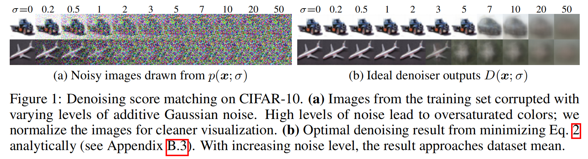 |
|---|
| 图1：CIFAR-10上的去噪分数匹配。(a) 从$p(x; \sigma)$中抽取的带噪图像。训练集中的图像被添加了不同程度的加性高斯噪声，高噪声水平会导致颜色过度饱和；为了更清晰地可视化，我们对图像进行了归一化处理。(b) 通过解析最小化公式2得到的最优去噪结果（见附录B.3）。随着噪声水平的增加，结果趋近于数据集均值。 |
- 时间相关的信号缩放：一些方法（见附录C.1）引入了额外的缩放调度$s(t)$，并将$x = s(t)\hat{x}$视为原始未缩放变量$\hat{x}$的缩放版本。这会改变时间相关的概率密度，从而也改变ODE的解轨迹。得到的ODE是公式1的推广：注意，在计算分数函数时，我们明确地消除了$x$的缩放，以保持$p(x; \sigma)$的定义与$s(t)$无关。
- 通过离散化求解：要求解的ODE是通过将公式3代入公式4来定义逐点梯度得到的，其解可以通过数值积分找到，即在离散的时间间隔上进行有限步的计算。这需要选择积分方案（例如，欧拉法或龙格 - 库塔法的变体）以及离散采样时间$\{t_{0}, t_{1}, \cdots, t_{N}\}$。许多先前的工作依赖于欧拉法，但我们在第3节中表明，二阶求解器在计算上具有更好的权衡。为简洁起见，我们在这里没有给出应用于我们的ODE的欧拉法的单独伪代码，但可以通过省略算法1中的第6 - 8行从该算法中提取。
- 整合：表1展示了在我们的框架中重现三种早期方法的确定性变体的公式。选择这些方法是因为它们被广泛使用且达到了最先进的性能，同时也是因为它们源自不同的理论基础。我们的一些公式与原始论文中的公式看起来有很大不同，因为去除了间接性和递归性；详细内容见附录C。这种重新表述的主要目的是揭示在先前工作中常常纠缠在一起的所有独立组件。在我们的框架中，组件之间没有隐式依赖关系 —— 原则上，对单个公式的任何合理选择都将导致一个可行的模型。换句话说，改变一个组件并不一定需要在其他地方进行改变，例如，以保持模型在极限情况下收敛到数据的性质。当然，在实践中，某些选择和组合会比其他的效果更好。
| 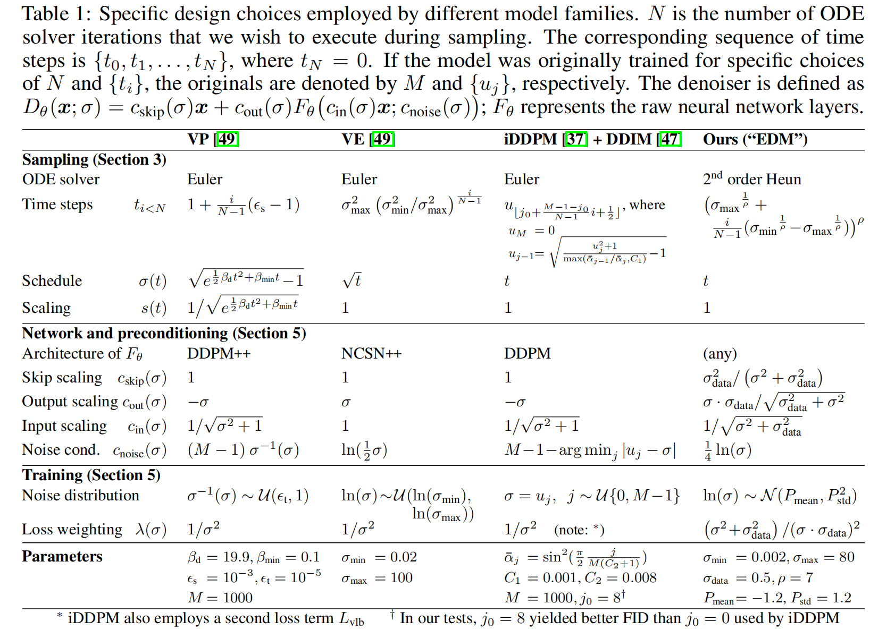 |
|---|
| ** |
3 确定性采样的改进
提高输出质量和（或）降低采样的计算成本是扩散模型研究中的常见课题（例如，[10, 24, 31, 32, 33, 37, 44, 53, 55, 56, 59]）。我们的假设是，与采样过程相关的选择在很大程度上独立于其他组件，如网络架构和训练细节。换句话说，$D_{\theta}$的训练过程不应决定$\sigma(t)$、$s(t)$和$\{t\}$，反之亦然；从采样器的角度来看，$D_{\theta}$只是一个黑箱[55, 56]。我们通过在三个预训练模型上评估不同的采样器来验证这一假设，每个模型代表不同的理论框架和模型家族。我们首先使用这些模型的原始采样器实现来测量基线结果，然后使用表1中的公式将这些采样器纳入我们的统一框架，接着进行我们的改进。这使我们能够评估不同的实际选择，并提出适用于所有模型的采样过程的通用改进方法。
我们评估了Song等人[49]在无条件CIFAR-10[29]数据集上训练的“DDPM++ cont. (VP)”和“NCSN++ cont. (VE)”模型，分辨率为32×32，它们分别对应于方差保持（VP）和方差爆炸（VE）公式[49]，最初受到DDPM[16]和SMLD[48]的启发。我们还评估了Dhariwal和Nichol[9]在类别条件ImageNet[8]数据集上训练的“ADM (dropout)”模型，分辨率为64×64，对应于改进的DDPM（iDDPM）公式[37]。该模型使用了一组离散的$M = 1000$个噪声水平进行训练。更多细节见附录C。
我们根据生成的50,000张图像与所有可用真实图像之间计算的弗雷歇初始距离（Fréchet inception distance，FID）[15]来评估结果质量。图2展示了FID与神经函数评估次数（NFE）的关系，即生成一张图像时$D_{\theta}$的评估次数。由于采样过程完全由$D_{\theta}$的计算成本主导，NFE的减少直接转化为采样速度的提升。原始确定性采样器以蓝色显示，我们在统一框架中重新实现的这些方法（橙色）产生了相似但始终更好的结果。差异是由原始实现中的一些疏忽以及我们在DDIM情况下对离散噪声水平更仔细的处理造成的；见附录C。注意，即使原始代码库的结构彼此差异很大，我们的重新实现也完全由算法1和表1指定。
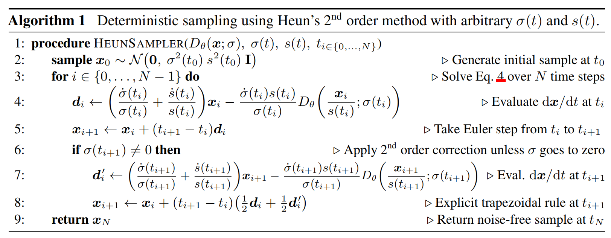
- 离散化和高阶积分器：数值求解ODE必然是对真实解轨迹的近似。在每一步中，求解器会引入截断误差，该误差在N步的过程中累积。局部误差通常与步长呈超线性关系，因此增加N可以提高解的准确性。
常用的欧拉法是一阶ODE求解器，其局部误差与步长$h$的关系为$O(h^{2})$ 。高阶龙格 - 库塔方法[50]在误差缩放方面表现更好，但每一步需要对$D_{\theta}$进行多次评估。最近也有人提出使用线性多步法进行扩散模型的采样[31, 59]。通过大量测试，我们发现Heun的二阶方法（也称为改进的欧拉法、梯形法则）[2]（Jolicoeur-Martineau等人[24]之前在扩散模型的背景下对其进行过探索）在截断误差和NFE之间提供了出色的权衡。如算法1所示，它为$x_{i + 1}$引入了一个额外的校正步骤，以考虑$dx/dt$在$t_{i}$和$t_{i + 1}$之间的变化。这个校正步骤以每步额外评估一次$D_{\theta}$为代价，使局部误差达到$O(h^{3})$ 。注意，当步长达到$\sigma = 0$时会导致除以零的情况，因此在这种情况下我们恢复使用欧拉法。我们在附录D.2中讨论二阶求解器的一般家族。时间步长$\{t\}$决定了步长以及截断误差在不同噪声水平之间的分布。我们在附录D.1中进行了详细分析，得出步长应随着$\sigma$的减小而单调减小，并且不需要在每个样本的基础上变化。我们采用一种参数化方案，其中时间步长根据噪声水平序列$\{\sigma_{i}\}$定义，即$t_{i} = \sigma^{-1}(\sigma_{i})$ 。我们设置$\sigma_{i<N} = (Ai + B)^{\rho}$，并选择常数A和B，使得$\sigma_{0} = \sigma_{max}$且$\sigma_{N - 1} = \sigma_{min}$，这给出：
这里$\rho$控制着靠近$\sigma_{min}$的步长以牺牲靠近$\sigma_{max}$的较长步长为代价缩短的程度。我们在附录D.1中的分析表明，设置$\rho = 3$几乎可以使每一步的截断误差相等，但在采样图像时，$\rho$在5到10之间的表现要优异得多。这表明靠近$\sigma_{min}$的误差影响很大。在本文的其余部分，我们将$\rho$设置为7。
Heun方法和公式5的结果如图2中的绿色曲线所示。我们在所有情况下都观察到了一致的改进：Heun方法在NFE显著更低的情况下达到了与欧拉法相同的FID。
| 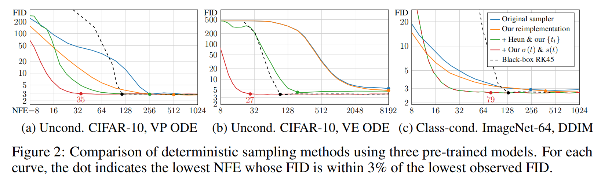 |
|---|
| ** |
- 轨迹曲率和噪声调度：ODE解轨迹的形状由函数$\sigma(t)$和$s(t)$定义。这些函数的选择提供了一种减少上述截断误差的方法，因为误差的大小预计与$dx/dt$的曲率成比例。我们认为这些函数的最佳选择是$\sigma(t) = t$和$s(t) = 1$，这也是DDIM[47]中的选择。有了这个选择，公式4中的ODE简化为$dx/dt = (x - D(x; t)) / t$，并且$\sigma$和$t$变得可以互换。
一个直接的结果是，在任何$x$和$t$处，向$t = 0$进行单个欧拉步就可以得到去噪图像$D_{\theta}(x; t)$ 。因此，解轨迹的切线总是指向去噪器的输出。可以预期，这会随着噪声水平的变化而缓慢改变，这对应于大致线性的解轨迹。图3c的一维ODE示意图支持了这一直觉；在大噪声水平和小噪声水平下，解轨迹都接近线性，只有在中间的一个小区域内有明显的曲率。在图1b的真实数据中也可以看到相同的效果，不同去噪器目标之间的变化发生在相对较窄的$\sigma$范围内。采用所倡导的调度，这意味着高ODE曲率被限制在相同的范围内。
| 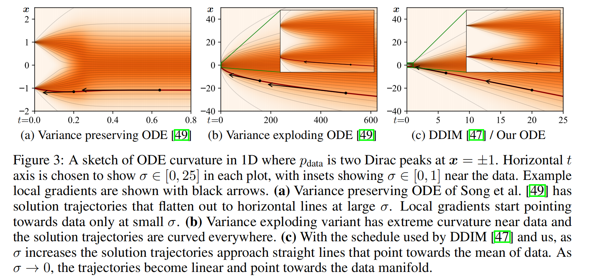 |
|---|
| ** |
图1：CIFAR-10上的去噪分数匹配。(a) 从$p(x; \sigma)$中抽取的带噪图像。训练集中的图像被添加了不同程度的加性高斯噪声，高噪声水平会导致颜色过度饱和；为了更清晰地可视化，我们对图像进行了归一化处理。(b) 通过解析最小化公式2得到的最优去噪结果（见附录B.3）。随着噪声水平的增加，结果趋近于数据集均值。
设置$\sigma(t) = t$和$s(t) = 1$的效果如图2中的红色曲线所示。由于DDIM已经采用了相同的选择，因此对于ImageNet - 64，红色曲线与绿色曲线相同。然而，VP和VE在从其原始调度切换到该调度时受益显著。
- 讨论：我们在本节中为改进确定性采样所做的选择总结在表1的“采样”部分。这些选择共同大幅减少了达到高质量结果所需的NFE：VP模型减少了7.3倍，VE模型减少了300倍，DDIM模型减少了3.2倍，对应于图2中突出显示的NFE值。在实践中，我们可以在单个NVIDIA V100上每秒生成26.3张高质量的CIFAR-10图像。改进的一致性证实了我们的假设，即采样过程与每个模型最初的训练方式无关。作为进一步的验证，我们在图2中展示了使用我们的调度的自适应RK45方法[11]的结果，以黑色虚线表示；这种复杂的ODE求解器的成本超过了其带来的好处。
4 随机采样
确定性采样有诸多优点，例如能够通过反转ODE将真实图像转换为相应的潜在表示。然而，与在每一步向图像中注入新噪声的随机采样相比，它往往会导致更差的输出质量。鉴于ODE和SDE在理论上能恢复相同的分布，那么随机性究竟起到什么作用呢？
- 背景：Song等人提出的SDE可以被推广为公式1中的概率流ODE与一个时变的朗之万扩散SDE的和（见附录B.5）：
其中$\omega_{t}$是标准维纳过程。$dx_{+}$和$dx_{-}$分别是时间正向和反向演化的SDE，通过Anderson的时间反转公式相互关联。朗之万项可以进一步看作是基于分数的确定性去噪项和随机噪声注入项的组合，它们的净噪声水平贡献相互抵消。因此，$\beta(t)$有效地表示了现有噪声被新噪声替代的相对速率。当选择$\beta(t)=\dot{\sigma}(t)/\sigma(t)$时，可得到Song等人提出的SDE，此时正向SDE中的分数项消失。
从这个角度可以揭示随机性在实践中有用的原因：隐式的朗之万扩散会在给定时间将样本推向期望的边际分布，主动纠正早期采样步骤中产生的任何错误。另一方面，用离散的SDE求解器步骤来近似朗之万项本身会引入误差。先前的结果表明非零的$\beta(t)$是有帮助的，但就我们所知，Song等人中对$\beta(t)$的隐式选择并没有特殊性质。因此，最优的随机程度应该通过实验确定。
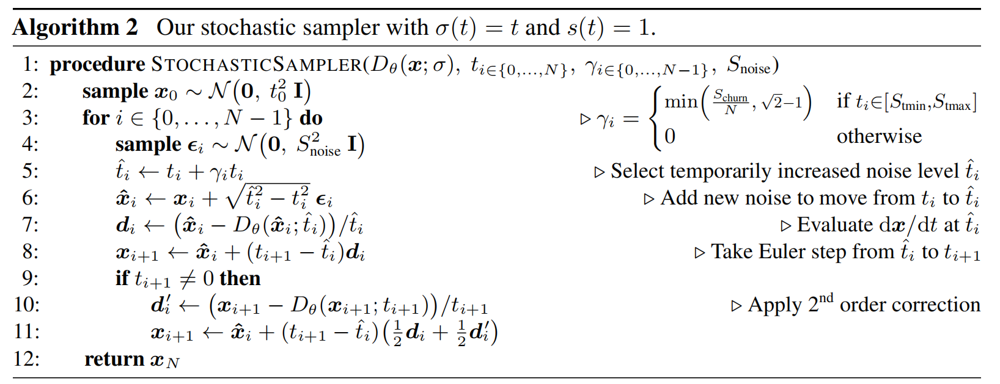
- 我们的随机采样器：我们提出一种随机采样器，它将我们的二阶确定性ODE积分器与类似朗之万的显式 “搅动”（添加和去除噪声）相结合。算法2给出了其伪代码。在每一步$i$，给定噪声水平$t_{i}(=\sigma(t_{i}))$下的样本$x_{i}$，我们执行两个子步骤。首先，根据因子$\gamma_{i}≥0$向样本中添加噪声，使其达到更高的噪声水平$\hat{t}_{i}=t_{i}+\gamma_{i}t_{i}$。其次，从增加噪声后的样本$\hat{x}_{i}$开始，用单步从$\hat{t}_{i}$反向求解ODE到$t_{i + 1}$。这会得到一个噪声水平为$t_{i + 1}$的样本$x_{i + 1}$，然后继续迭代。
我们强调这不是一个通用的SDE求解器，而是针对特定问题定制的采样过程。它的正确性源于两个子步骤的交替，每个子步骤（在ODE步骤的截断误差范围内）都能保持正确的分布。Song等人的预测 - 校正采样器在概念上与我们的结构相似。
为了分析我们的方法与欧拉 - 丸山方法的主要区别，我们首先注意到后者在离散化公式6时存在一个细微差异。可以将欧拉 - 丸山方法解释为先添加噪声，然后执行一个ODE步骤，但不是从噪声注入后的中间状态开始，而是假设$x$和$\sigma$在迭代步骤开始时保持初始状态。在我们的方法中，算法2第7行用于评估$D_{\theta}$的参数对应于噪声注入后的状态，而类似欧拉 - 丸山的方法会使用$x_{i}$和$t_{i}$，而不是$\hat{x}_{i}$和$\hat{t}_{i}$。在$\Delta_{t}$趋近于零的极限情况下，这些选择可能没有差异，但在采用大步长追求低NFE时，这种区别似乎变得很重要。
- 实际考虑因素：增加随机程度可以有效地纠正早期采样步骤中产生的错误，但它也有自身的缺点。我们观察到（见附录E.1），在所有数据集和去噪器网络中，过度类似朗之万的噪声添加和去除会导致生成图像的细节逐渐丢失。在极低和极高噪声水平下，还会出现颜色过度饱和的漂移现象。我们怀疑实际的去噪器在公式3中引入了一个略微非保守的向量场，违反了朗之万扩散的前提条件，从而导致这些不利影响。值得注意的是，我们使用解析去噪器（如图1b中的去噪器）进行的实验并未显示出这种退化。
如果退化是由$D_{\theta}(x;\sigma)$的缺陷引起的，那么只能在采样过程中使用启发式方法来补救。我们通过仅在特定的噪声水平范围$t_{i} \in [S_{tmin}, S_{tmax}]$内启用随机性来解决颜色过度饱和的漂移问题。对于这些噪声水平，我们定义$\gamma_{i}=S_{churn}/N$，其中$S_{churn}$控制整体的随机程度。我们进一步限制$\gamma_{i}$，确保引入的新噪声不会超过图像中已有的噪声。最后，我们发现将$S_{noise}$设置为略大于1以增大新添加噪声的标准差，可以部分抵消细节的丢失。这表明，假设的$D_{\theta}(x;\sigma)$的非保守性的一个主要因素是倾向于去除略多的噪声，这很可能是由于任何基于$L_{2}$训练的去噪器都会出现的向均值回归现象。
- 评估：图4显示，我们的随机采样器在性能上显著优于以前的采样器，尤其是在低步数的情况下。Jolicoeur-Martineau等人使用标准的高阶自适应SDE求解器，其性能通常是这类求解器的良好基线。我们的采样器是针对特定用例定制的，例如，它按顺序执行噪声注入和ODE步骤，并且不具有自适应性。在扩散模型采样中，自适应求解器是否能比经过良好调整的固定调度更具优势，仍是一个悬而未决的问题。
| 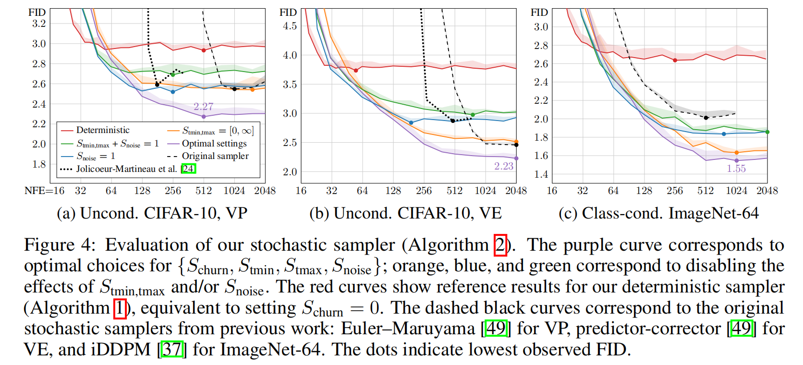 |
|---|
| ** |
仅通过采样器的改进，我们就能将最初FID为2.07的ImageNet-64模型提升到1.55，非常接近当前的最优水平；此前，级联扩散的FID为1.48，无分类器引导的FID为1.55，StyleGANXL的FID为1.52。虽然我们的结果展示了通过改进采样器可以实现的潜在收益，但它们也凸显了随机性的主要缺点：为了获得最佳结果，必须根据具体模型进行若干启发式选择，这些选择可能是隐式的，也可能是显式的。实际上，我们必须使用网格搜索（附录E.2）针对每个案例找到$\{S_{churn}, S_{tmin}, S_{tmax}, S_{noise}\}$的最优值。这引发了一个普遍的担忧，即使用随机采样作为评估模型改进的主要方法，可能会在不经意间影响与模型架构和训练相关的设计选择。
5 预处理与训练
在有监督的神经网络训练中，存在各种已知的有效方法。例如，通常建议将输入和输出信号的幅度固定，比如保持单位方差，并避免每个样本的梯度幅度出现较大变化。直接训练神经网络来对D进行建模并非理想选择。例如，由于输入$x = y + n$是干净信号$y$和噪声$n \sim N(0, \sigma^{2}I)$的组合，其幅度会因噪声水平$\sigma$的不同而有很大差异。因此，常见的做法是不直接将$D_{\theta}$表示为神经网络，而是训练另一个网络$F_{\theta}$，并从中推导出$D_{\theta}$ 。
先前的方法通过依赖于$\sigma$的归一化因子来处理输入缩放问题，并尝试通过训练$F_{\theta}$来预测缩放至单位方差的噪声$n$，进而通过$D_{\theta}(x; \sigma)=x - \sigma F_{\theta}(\cdot)$来重建信号。这种方法的缺点在于，当$\sigma$较大时，网络需要仔细调整输出，以精确抵消现有的噪声$n$，并给出正确缩放的输出。需要注意的是，网络产生的任何误差都会被$\sigma$放大。在这种情况下，直接预测期望输出$D(x; \sigma)$似乎要容易得多。与先前那些自适应混合信号和噪声的参数化方法（例如）类似，我们提出通过依赖于$\sigma$的跳跃连接对神经网络进行预处理，使网络能够估计$y$或$n$，或者介于两者之间的数值。因此，我们将$D_{\theta}$写为以下形式：
其中，$F_{\theta}$是要训练的神经网络，$c_{skip}(\sigma)$调节跳跃连接，$c_{in}(\sigma)$和$c_{out}(\sigma)$对输入和输出幅度进行缩放，$c_{noise}(\sigma)$将噪声水平$\sigma$映射为$F_{\theta}$的条件输入。对公式2在噪声水平上取加权期望，可得到总体训练损失$\mathbb{E}_{\sigma, y, n}[\lambda(\sigma)|D(y + n; \sigma) - y|_{2}^{2}]$，其中$\sigma \sim p_{train}$，$y \sim p_{data}$，$n \sim N(0, \sigma^{2}I)$。采样到给定噪声水平$\sigma$的概率由$p_{train}(\sigma)$给出，相应的权重由$\lambda(\sigma)$给出。我们可以根据公式7中的原始网络输出$F_{\theta}$等效地表达这个损失：
这个形式揭示了$F_{\theta}$的有效训练目标，使我们能够从基本原理出发确定合适的预处理函数选择。如附录B.6所述，我们通过要求网络输入和训练目标具有单位方差（$(c_{in}, c_{out})$），并尽可能减少$F_{\theta}$中的误差放大（$( c_{skip})$），推导出了表1“我们的方法”一列中所示的选择。$C_{noise}$的公式是通过经验选择的。
表2展示了一系列训练设置的FID，使用我们在第3节中的确定性采样器进行评估。我们从Song等人的基线训练设置开始，该设置在VP和VE两种情况下有很大差异；我们分别给出了每种情况的结果（配置A）。为了获得更有意义的比较点，我们重新调整了基本超参数（配置B），并通过去除最低分辨率层并加倍最高分辨率层的容量来提高模型的表达能力（配置C）；更多细节见附录F.3。然后，我们用我们的预处理方法替换了原来的$\{c_{in}, c_{out}, c_{noise}, c_{skip}\}$选择（配置D），结果基本保持不变，不过在64×64分辨率下，VE有了显著提升。我们的预处理的主要好处不是直接提高FID，而是使训练更加稳健，使我们能够专注于重新设计损失函数而不会产生不利影响。
| 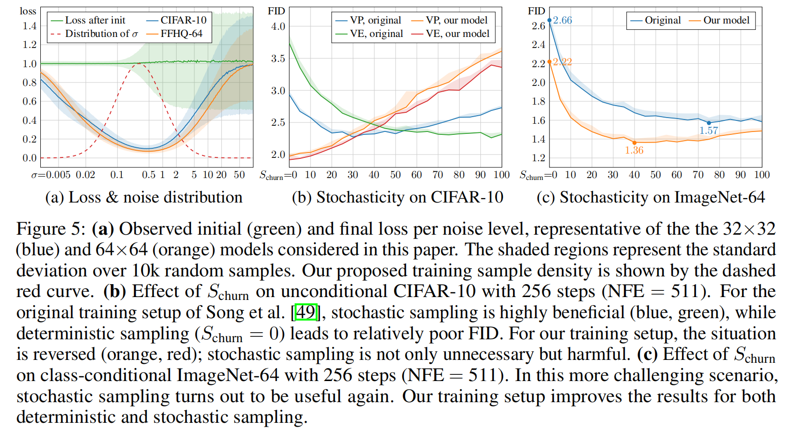 |
|---|
| ** |
| 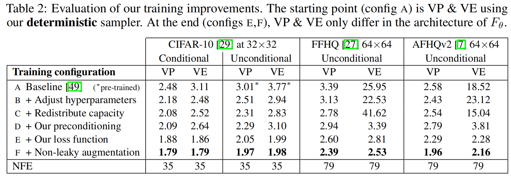 |
|---|
| ** |
- 损失加权和采样：公式8表明，按照公式7进行预处理后训练$F_{\theta}$，每个样本的有效损失权重为$\lambda(\sigma)c_{out}(\sigma)^{2}$。为了平衡有效损失权重，我们设置$\lambda(\sigma)=1 / c_{out}(\sigma)^{2}$，这也使整个$\sigma$范围内的初始训练损失趋于均衡，如图5a中的绿色曲线所示。最后，我们需要选择$p_{train}(\sigma)$，即在训练过程中选择噪声水平的方式。检查训练后的每个$\sigma$的损失（蓝色和橙色曲线）可以发现，只有在中等噪声水平下才有可能显著降低损失；在极低噪声水平下，辨别微小的噪声分量既困难又无关紧要，而在高噪声水平下，训练目标总是与接近数据集平均值的正确答案差异较大。因此，我们使用表1中详细说明的简单对数正态分布$p_{train}(\sigma)$，将训练重点放在相关范围内，如图5a中的红色曲线所示。
表2显示，当与我们的预处理（配置D）结合使用时，我们提出的$p_{train}$和$\lambda$（配置E）在所有情况下都显著提高了FID。在同期工作中，Choi等人提出了类似的方案，以优先处理与形成图像中可感知内容最相关的噪声水平。然而，他们只单独考虑了$\lambda$的选择，因此整体改进较小。
- 增强正则化：为了防止在较小数据集上训练扩散模型时经常出现的过拟合问题，我们借鉴了生成对抗网络（GAN）文献中的增强管道。该管道由各种几何变换组成（见附录F.2），在添加噪声之前应用于训练图像。为了防止增强信息泄漏到生成的图像中，我们将增强参数作为$F_{\theta}$的条件输入；在推理时，我们将其设置为零，以确保只生成未增强的图像。表2显示，数据增强持续带来改进（配置F），在条件和无条件CIFAR-10上产生了新的最先进FID，分别为1.79和1.97，超过了之前的记录1.85和2.10。
- 重新审视随机采样：有趣的是，随着模型本身的改进，随机采样的相关性似乎在降低，如图5b和图5c所示。在CIFAR-10上使用我们的训练设置时（图5b），确定性采样获得了最佳结果，任何程度的随机采样都是有害的。
ImageNet-64：作为最后一个实验，我们使用提出的训练改进方法从头开始训练了一个类别条件ImageNet-64模型。该模型实现了新的最先进FID 1.36，而之前的记录是1.48。我们使用了Dhariwal和Nichol的ADM架构，未做任何更改，并使用配置E进行训练，只进行了最小限度的调整；详细信息见附录F.3。我们没有发现过拟合的问题，因此选择不使用增强正则化。如图5c所示，与预训练模型相比，最优的随机采样量要低得多，但与CIFAR-10不同的是，随机采样明显优于确定性采样。这表明，更多样化的数据集仍然受益于随机采样。
6 结论
我们将扩散模型纳入通用框架的方法揭示了其模块化设计。这使得对单个组件进行有针对性的研究成为可能，有助于更全面地探索可行的设计空间。在我们的测试中，这种方法让我们能够简单地替换早期模型中的采样器，显著提升结果。例如，在ImageNet-64上，我们的采样器将一个普通模型（FID为2.07）提升为与之前最先进模型（FID为1.48）相媲美的有力竞争者（FID为1.55），并且通过训练改进，达到了FID为1.36的最先进水平。我们还在CIFAR-10上取得了新的最先进结果，且仅使用了35次模型评估、确定性采样和一个小型网络。当前的高分辨率扩散模型依赖于单独的超分辨率步骤、子空间投影、非常大的网络或混合方法 ，我们认为我们的贡献与这些扩展方法并不冲突。不过，对于更高分辨率的数据集，我们的许多参数值可能需要重新调整。此外，我们认为随机采样与训练目标之间的精确交互仍然是一个有趣的问题，值得未来进一步研究。
社会影响：我们在样本质量方面的进展如果在像DALL·E 2这样的大规模系统中使用，可能会放大负面社会影响，包括各种虚假信息，以及强化刻板印象和有害偏见等问题。扩散模型的训练和采样需要消耗大量电力，我们的项目在内部的NVIDIA V100集群上消耗了约250兆瓦时的电量。
A. 更多结果
图6展示了使用Dhariwal和Nichol预训练的ADM模型生成的64×64分辨率的类条件ImageNet图像。将原始的DDIM和iDDPM采样器与我们在确定性和随机设置下（第3和第4节）的采样器进行了比较。图7展示了我们使用改进的训练配置（第5节）从头开始训练模型时获得的相应结果。
在图8和图9（无条件CIFAR-10）、图10（类条件CIFAR-10）以及图11（FFHQ和AFHQv2）中，将Song等人的原始采样器和训练配置与我们的进行了比较。为便于比较，在不同的训练配置和ODE选择下，每个数据集/场景都使用相同的潜在代码$x_0$。图12展示了使用确定性采样时，不同神经网络函数评估次数（NFE）下生成的图像质量。
表3和表4总结了在各种数据集上确定性和随机采样方法的数值结果，之前在图2和图4中以NFE的函数形式展示过。
| 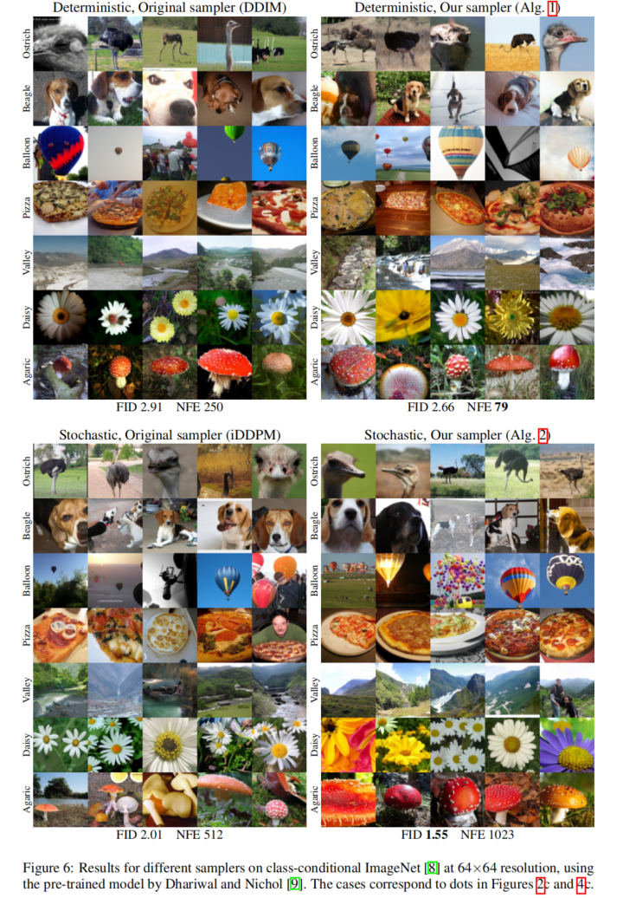 | 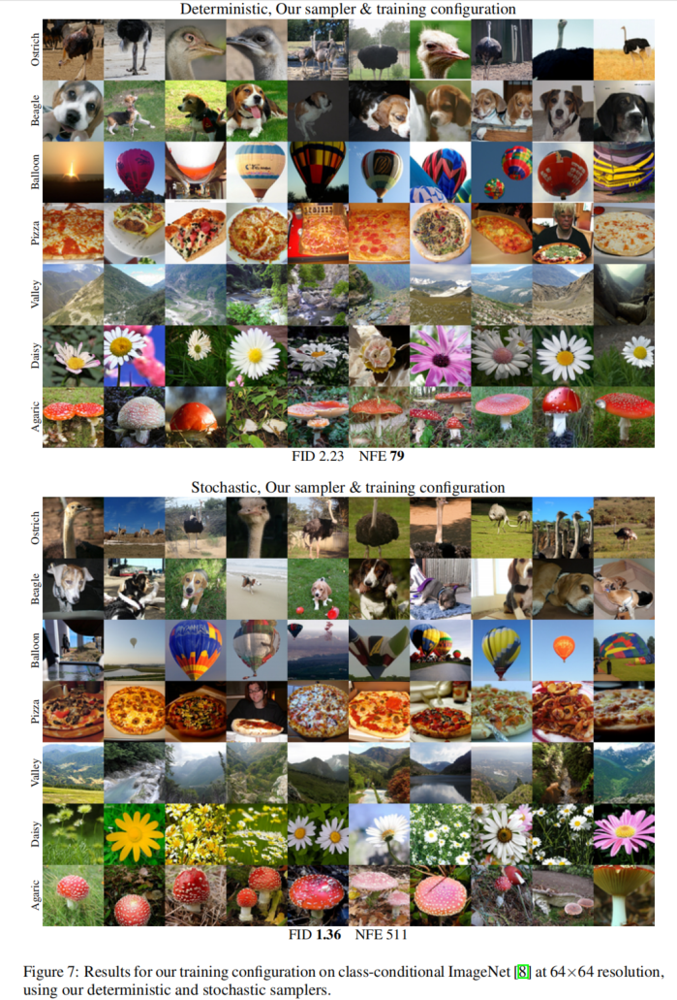 |
|---|---|
| 图6：使用Dhariwal和Nichol[9]的预训练模型，不同采样器在64×64分辨率的类条件ImageNet[8]上的生成结果。这些情况与图2c和图4c中的点相对应。 | 图7：使用我们的确定性和随机采样器，在64×64分辨率的类条件ImageNet[8]上，采用我们的训练配置得到的结果。（FID为1.36，NFE为511 ） |
| 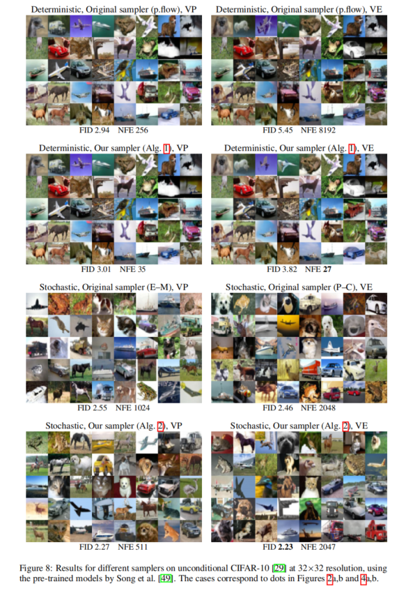 | 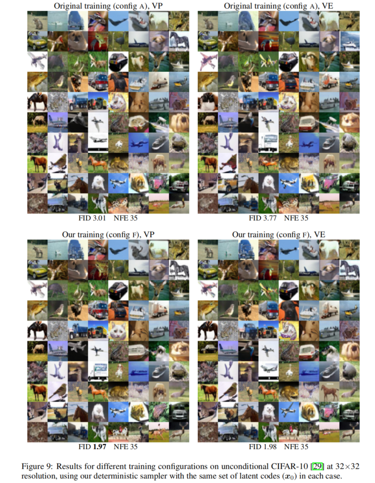 |
|---|---|
| 图8：使用Song等人[49]的预训练模型，不同采样器在32×32分辨率的无条件CIFAR-10[29]数据集上的结果。这些情况对应于图2a、2b和图4a、4b中的点。 | 图9：在32×32分辨率的无条件CIFAR-10[29]数据集上，不同训练配置使用我们的确定性采样器，且每种情况均采用同一组潜在代码（$(x_{0})$ ）得到的结果。（两种情况的FID分别为1.97和1.98，NFE均为35） |
| 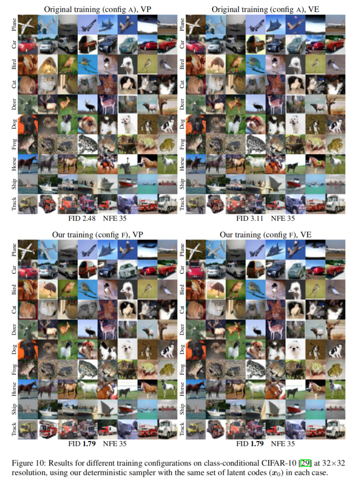 | 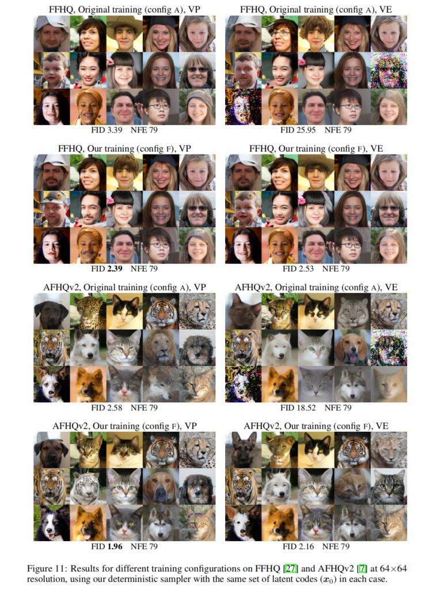 |
|---|---|
| 图10：在32×32分辨率的类条件CIFAR-10 [29]上，不同训练配置使用我们的确定性采样器且每种情况都使用同一组潜在代码（$(x_{0})$ ）得到的结果。 | 图11：在64×64分辨率下，针对FFHQ [27]和AFHQv2 [7]数据集，不同训练配置使用我们的确定性采样器，且每种情况均采用同一组潜在代码（$(x_{0})$ ）所得到的结果。 |
| 图12：使用我们的确定性采样器时，图像质量和弗雷歇初始距离（FID）随神经函数评估次数（NFE）的变化情况。在32×32分辨率下，当NFE约为13时可达到合理的图像质量，但FID会持续改善，直至NFE达到35；在64×64分辨率下，NFE约为19时可达到合理的图像质量，而FID会一直改善，直到NFE达到79。 |
| 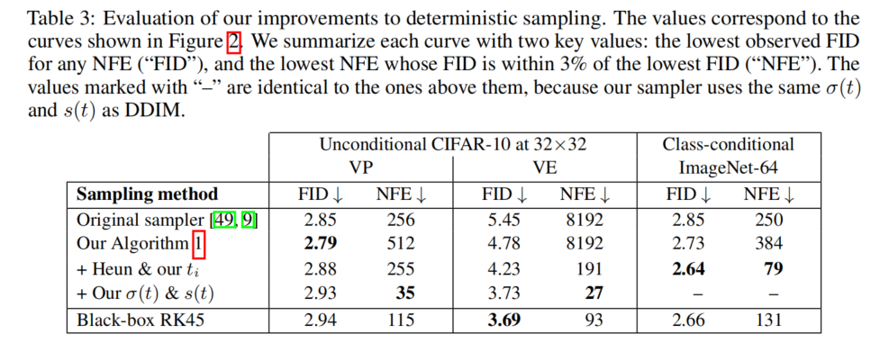 |
|---|
| 表3：对我们确定性采样改进的评估。这些数值对应于图2中所示的曲线。我们用两个关键数值来总结每条曲线：在任意神经函数评估次数（NFE）下观测到的最低弗雷歇初始距离（FID）（“FID”），以及FID在最低FID的3%范围内的最低NFE（“NFE”）。标记为“–”的数值与它们上面的数值相同，因为我们的采样器使用与去噪扩散隐式模型（DDIM）相同的$\sigma(t)$和$s(t)$。 |
| 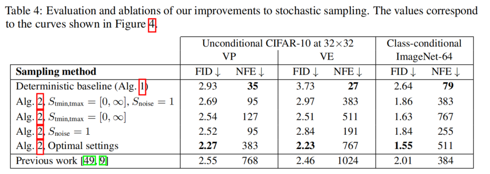 |
|---|
| 表4：对我们随机采样改进的评估和消融实验。这些值对应于图4中所示的曲线。 |
B. 公式推导
B.1 先前工作中的原始ODE/SDE公式
Song等人将他们的正向随机微分方程（SDE，论文[49]中的公式5）定义为：
其中，$\omega_t$是标准维纳过程，$f(\cdot, t): \mathbb{R}^{d} \to \mathbb{R}^{d}$和$g(\cdot): \mathbb{R} \to \mathbb{R}$分别是漂移系数和扩散系数，这里$d$是数据集的维度。这些系数在方差保持（VP）和方差爆炸（VE）公式中的选择有所不同，并且$f(\cdot)$始终具有$f(x, t) = f(t)x$的形式，其中$f(\cdot): \mathbb{R} \to \mathbb{R}$。因此，该SDE可以等效地写为：
这个SDE的扰动核（论文[49]中的公式29）具有一般形式：
其中，$\mathcal{N}(x; \mu, \sum)$表示在$x$处评估的$\mathcal{N}(\mu, \sum)$的概率密度函数
边缘分布$p_t(x)$是通过对$x(0)$上的扰动核进行积分得到的：
Song等人定义了概率流常微分方程（ODE，论文[49]中的公式13），使其遵循相同的$p_t(x)$：
B.2 我们的ODE公式（公式1和公式4）
原始的ODE公式（公式14）是围绕函数$f$和$g$构建的，这些函数直接对应于公式中出现的特定项；边缘分布的性质（公式12）只能基于这些函数间接推导出来。然而，$f$和$g$本身在实际中并没有太大的意义，而边缘分布在首先训练模型、启动采样过程以及理解ODE在实践中的行为方面至关重要。鉴于概率流ODE的思想是匹配特定的一组边缘分布，将边缘分布视为头等重要的对象并直接基于$\sigma(t)$和$s(t)$定义ODE是有意义的，这样就无需$f(t)$和$g(t)$了。
让我们首先以封闭形式表达公式13中的边缘分布：
其中，$p_a * p_b$表示概率密度函数$p_a$和$p_b$的卷积。括号内的表达式对应于通过向样本中添加独立同分布的高斯噪声得到的$p_{data}$的平滑版本。我们将这个分布表示为$p(x; \sigma)$：
现在，我们可以使用$p(x; \sigma)$而不是$p_t(x)$来表达概率流ODE（公式14）：
接下来，根据公式12，我们用$s(t)$来重写$f(t)$：
类似地，我们也可以用$\sigma(t)$来重写$g(t)$：
最后，将$f$（公式28）和$g$（公式34）代入公式24中的ODE：
这样我们就得到了论文主体中的公式4，当设置$s(t) = 1$时，就恢复到公式1：
我们的公式（公式4）强调了一个事实，即概率流ODE的每一个实现都只是同一个规范ODE的重新参数化；改变$\sigma(t)$对应于对$t$进行重新参数化，而改变$s(t)$对应于对$x$进行重新参数化。
B.3 去噪分数匹配（公式2和公式3）
为了完整性，我们推导有限数据集下分数匹配和去噪之间的联系。关于这个主题的更一般处理和进一步背景，请参见Hyvärinen和Vincent的研究。
假设我们的训练集由有限数量的样本$\{y_1, …, y_Y\}$组成。这意味着$p_{data}(x)$由狄拉克δ分布的混合表示：
这使得我们也可以基于公式20以封闭形式表达$p(x; \sigma)$：
现在考虑公式2中的去噪分数匹配损失。通过展开期望，我们可以将公式重写为对噪声样本$x$的积分：
公式50意味着我们可以通过独立地对每个$x$最小化$\mathcal{L}(D; x, \sigma)$来最小化$\mathcal{L}(D; \sigma)$：
这是一个凸优化问题；通过将关于$D(x; \sigma)$的梯度设为零，可以唯一确定其解：
这给出了理想去噪器$D(x; \sigma)$的封闭形式解。注意，对于小数据集，公式57在实践中是可计算的——我们在图1b中展示了CIFAR-10的结果。
接下来，考虑公式45中定义的分布$p(x; \sigma)$的分数：
我们可以进一步简化公式60的分子：
将结果代回公式60：
注意，公式68中的分数与公式57相同。因此，我们可以等效地将公式68写为：
这与论文主体中的公式3一致。
B.4 在实践中评估我们的ODE（算法1）
我们将$x$视为原始非缩放变量$\hat{x}$的缩放版本，并将$x = s(t)\hat{x}$代入我们缩放后的ODE（公式4）中出现的分数项：
我们可以使用公式3，根据$D(\cdot)$进一步改写这个式子：
现在，我们将公式74代入公式4中，用我们训练的模型$D_{\theta}(\cdot)$近似理想去噪器$D(\cdot)$：
最后，代回$\hat{x} = x / s(t)$：
我们可以将公式80等效地写为：
这与算法1的第4行和第7行一致。
B.5 我们的SDE公式（公式6）
我们通过以下策略推导公式6中的SDE：
- 期望的边际密度$p(x;\sigma(t))$是数据密度$p_{data}$与标准差为$\sigma(t)$的各向同性高斯密度的卷积（见公式20）。因此，作为时间$t$的函数，该密度根据具有时变扩散率的热扩散偏微分方程演化。第一步，我们找到这个偏微分方程。
- 然后，我们使用福克 - 普朗克方程来恢复一族SDE，其密度根据这个偏微分方程演化。公式6是通过对这族方程进行适当的参数化得到的。
B.5.1 通过热扩散生成边际分布
我们考虑概率密度$q(x,t)$的时间演化。我们的目标是找到一个偏微分方程，其初始值$q(x,0) := p_{data}(x)$的解为$q(x,t)=p(x,\sigma(t))$。也就是说，这个偏微分方程应该再现我们在公式20中假设的边际分布。
期望的边际分布是$p_{data}$与具有时变标准差$\sigma(t)$的各向同性正态分布的卷积，因此，可以由具有时变扩散率$\kappa(t)$的热方程生成。在傅里叶域中分析这种情况最为方便，在傅里叶域中，边际密度只是高斯函数与变换后的数据密度的逐点乘积。为了找到能产生正确标准差的扩散率，我们首先写出热方程偏微分方程：
公式82在$x$维度上进行傅里叶变换后的对应方程为：
目标解$q(x,t)$及其傅里叶变换$\hat{q}(\nu,t)$由公式20给出：
对目标解沿时间轴求导，我们得到：
公式83和87的左边是相同的。使它们相等，我们可以求解出产生期望演化的$\kappa(t)$：
总之，对应于噪声水平$\sigma(t)$的期望边际密度由偏微分方程
从初始密度$q(x,0)=p_{data}(x)$生成。
B.5.2 我们的SDE推导
给定一个SDE
福克 - 普朗克偏微分方程描述了其解概率密度$r(x,t)$的时间演化：
其中$D_{ij}=\sum_{k}g_{ik}g_{jk}$是扩散张量。我们考虑$g(x,t)=g(t)I$这种与$x$无关的白噪声添加的特殊情况，此时方程简化为：
我们正在寻找一个SDE，其解密度由公式90中的偏微分方程描述。令$r(x,t)=q(x,t)$，并使公式93和90相等，我们发现SDE必须满足的充分条件：
任何满足此方程的函数$f(x,t)$和$g(t)$的选择都构成一个我们所寻找的SDE。现在让我们找到这样一组特定的解。关键思想是利用恒等式$\nabla_x\cdot\nabla_x=\Delta_x$。实际上，如果我们对于任何$v(t)$的选择，设置$f(x,t)q(x,t)=v(t)\nabla_xq(x,t)$，那么$\Delta_xq(x,t)$项会出现在等式两边并消去：
上述$f(x,t)$实际上与分数函数成比例，因为该公式与密度对数的梯度相匹配：
将其代回公式91，并将$q(x,t)$替换为$p(x;\sigma(t))$，我们恢复了一族SDE，对于任何$g(t)$的选择，其解密度都具有期望的噪声水平为$\sigma(t)$的边际分布：
自由参数$g(t)$有效地指定了在任何给定时刻的噪声替换率。$g(t)=0$的特殊情况对应于概率流ODE。然而，由$g(t)$进行的参数化并不是特别直观。为了获得更具可解释性的参数化，我们设置$g(t)=\sqrt{2\beta(t)}\sigma(t)$，这就得到了论文主体中公式6的（正向）SDE：
现在噪声替换与噪声的标准差$\sigma(t)$成比例，比例因子为$\beta(t)$。实际上，根据公式3展开中间项中的分数函数，得到$\beta(t)[D(x;\sigma(t)) - x]dt$，这使得$x$与负噪声分量成比例地变化；随机项以相同的速率注入新的噪声。直观地说，根据当前噪声标准差缩放朗之万探索的幅度是一个合理的基线，因为由于密度的模糊，数据流形实际上被“扩展”了这个量。
在去噪扩散中使用的反向SDE，只需对公式103应用Anderson的时间反转公式（如Song等人的论文[49]中的公式6所述）即可得到；反转的全部效果是中间项的符号变化。
SDE的缩放推广可以使用与前面推导ODE类似的方法得到。因此，这里省略其推导过程。
B.6 我们的预处理和训练（公式8）
根据公式2，给定去噪器 $D_{\theta}$ 在给定噪声水平 $\sigma$ 下的去噪分数匹配损失为：
我们通过对噪声水平求$L(D_{\theta} ; \sigma)$的加权期望，得到整体训练损失：
其中，噪声水平根据$\sigma \sim p_{train}$分布，并由$\lambda(\sigma)$加权。
利用我们在公式（7）中对 $D_{\theta}(\cdot)$ 的定义，我们可以进一步将 $\mathcal{L}(D_{\theta})$ 改写为：
这与公式8一致，并且对应于使用标准 $L_{2}$ 损失对 $F_{\theta}$ 进行传统监督训练，有效权重为 $w(·)$ ，目标为 $F_{target}(·)$ ，其中：
现在，我们可以从第一性原理推导出 $c_{in}(\sigma)$、$c_{out}(\sigma)$、$c_{skip}(\sigma)$ 和 $\lambda(\sigma)$ 的公式，如 表1 “我们的方法” 一列所示。
首先，我们要求 $F_{\theta}(\cdot)$ 的训练输入具有单位方差：
其次，我们要求有效训练目标 $F_{target}$ 具有单位方差：
第三，我们选择 $c_{skip}(\sigma)$ 来最小化 $c_{out}(\sigma)$，以便尽可能减少 $F_{\theta}$ 的误差放大：
由于 $c_{out}(\sigma) \geq 0$，我们可以等效地写为：
这是一个凸优化问题；通过将关于 $c_{skip}(\sigma)$ 的导数设为零，可以唯一确定其解：
现在，我们将公式131代入公式123，完成 $c_{out}(\sigma)$ 的公式：
第四，我们要求有效权重 $w(\sigma)$ 在所有噪声水平上是均匀的：
我们遵循先前的工作，将输出层权重初始化为零。因此，在初始化时 $F_{\theta}(\cdot)=0$ ，并且在每个噪声水平下损失的期望值为1。通过将 $\lambda(\sigma)$ 和 $c_{skip}(\sigma)$ 的选择代入公式109，并在固定的 $\sigma$ 下考虑，可以看出这一点：
C. 在我们的框架中重新构建先前的方法
在本节中，我们推导表1中先前方法的公式，讨论相应的原始采样器和预训练模型，并详细说明在我们的框架中使用它们时的实际注意事项。
在实践中，这些方法的原始实现在模型输入和输出的定义、图像数据的动态范围、$x$的缩放以及$\sigma$的解释等方面存在很大差异。我们通过标准化统一设置来消除这些差异，在该设置中模型始终符合我们对$F_{\theta}$的定义，图像数据始终在连续范围$[-1, 1]$内表示，并且$x$和$\sigma$的细节始终与公式4一致。
我们通过始终以双精度执行算法1和算法2来最小化浮点舍入误差的累积。然而，为了最小化运行时间并在网络架构方面与先前的工作保持一致，我们仍然以单精度（float32）执行网络$F_{\theta}(\cdot)$。
C.1 方差保持公式
C.1.1 VP采样
Song等人将VP随机微分方程（SDE，论文[49]中的公式32）定义为：
这与公式10相匹配，其中$f$和$g$的选择如下：
令$\alpha(t)$表示$\beta(t)$的积分：
其中$\beta_{d} = \beta_{max} - \beta_{min}$。现在，我们通过将公式153代入公式12来获得$\sigma(t)$的公式：
这与表1中“Schedule（调度）”一行相匹配。类似地，对于$s(t)$：
这与表1中“Scaling（缩放）”一行相匹配。利用公式163，我们可以将公式169以更简单的形式等效地写为：
Song等人选择在$[\epsilon_{s}, 1]$内均匀分布采样时间步$\{t_{0}, …, t_{N - 1}\}$。这对应于设置：
这与表1中“Time steps（时间步）”一行相匹配。
最后，Song等人设置$\beta_{min} = 0.1$，$\beta_{max} = 20$，$\epsilon_{s} = 10^{-3}$（论文[49]的附录C），并选择将图像表示在范围$[-1, 1]$内。这些选择很容易与我们的公式兼容，并反映在表1的“Parameters（参数）”部分。
C.1.2 VP预处理
在VP的情况下，Song等人将公式13中$p_{t}(x)$的分数近似为：
其中 $M = 1000$，$F_{\theta}$ 表示网络，$\bar{\sigma}(t)$ 对应公式（11）中扰动核的标准差。
让我们分别展开公式（20）和（11）中 $p_t(\boldsymbol{x})$ 和 $\bar{\sigma}(t)$ 的定义，并代入 $\boldsymbol{x} = s(t)\hat{\boldsymbol{x}}$，以得到关于未缩放变量 $\hat{\boldsymbol{x}}$ 的相应公式：
我们现在可以用公式（3）替换等式左边，并展开公式（170）中 $s(t)$ 的定义：
通过将$\sigma(t) \to \sigma$和$t \to \sigma^{-1}(\sigma)$替换，可以进一步用$\sigma$表示该式：
我们采用公式180的右边作为$D_{\theta}$的定义，得到：
其中$c_{skip}$、$c_{out}$、$c_{in}$和$c_{noise}$与表1中“Network and preconditioning（网络和预处理）”部分相匹配。
C.1.3 VP训练
Song等人将他们的训练损失定义为：
其中$score(·)$的定义与公式172中的相同。让我们通过代入$\overline{\sigma}(t) = s(t)\sigma(t)$和$\overline{n} = n / \sigma(t)$（其中$n \sim \mathcal{N}(0, \sigma(t)^2I)$）来简化该公式：
我们可以通过结合公式172、公式170和公式74，用$D_{\theta}(\cdot)$来表示$score()$：
将其代回公式185得到：
通过将$\sigma(t) \to \sigma$和$t \to \sigma^{-1}(\sigma)$替换，我们可以进一步用$\sigma$来表示该式：
这与公式108相匹配，其中$p_{train}$和$\lambda$的选择如表1中“Training（训练）”部分所示。
C.1.4 VP实际注意事项
我们在CIFAR-10上使用的预训练VP模型对应于Song等人提供的“DDPM++ cont. (VP)”检查点。它包含总共6200万个可训练参数，并支持连续的噪声水平范围$\sigma \in[\sigma(\epsilon_{t}), \sigma(1)] \approx[0.001, 152]$，即比我们首选的采样范围$[0.002, 80]$更宽。我们直接将该模型导入为$F_{\theta}(\cdot)$，并使用表1中的定义运行算法1和算法2。
在图2a中，原始采样器（蓝色）和我们的重新实现（橙色）之间的差异是由Song等人实现中的疏忽造成的，Jolicoeur-Martineau等人也指出了这一点（论文[24]的附录D）。首先，原始采样器在欧拉步中使用了错误的乘数：它将$dx / dt$乘以$-1/N$，而不是$(\epsilon_{s} - 1) / (N - 1)$。其次，在最后一步，它从$t_{N - 1} = \epsilon_{s}$到$t_{N} = \epsilon_{s} - 1 / N$时会出现过冲或下冲的情况，当$N < 1000$时，$t_{N} < 0$。在实践中，这意味着生成的图像包含明显的噪声，例如当$N = 128$时，噪声会变得相当严重。我们的公式避免了这些问题，因为算法1中的步长是根据$\{t\}$一致计算的，并且$t_{N} = 0$。
C.2 方差爆炸公式
C.2.1 理论上的VE采样
Song等人将VE随机微分方程（论文[49]中的公式30）定义为：
这与公式10相匹配，其中：
VE公式不采用缩放，从公式12中很容易看出这一点：
将公式192代入公式12，可得到$\sigma(t)$的如下形式：
公式199与Song等人报告的扰动核（论文[49]中的公式29）一致。然而，我们注意到这并不符合他们对$\sigma(t)=\sigma_{min}(\frac{\sigma_{max}}{\sigma_{min}})^{t}$的预期定义（论文[49]的附录C）。
C.2.2 实践中的VE采样
Song等人的原始实现使用反向扩散预测器对离散化的VE随机微分方程的离散化反向概率流进行积分。综合起来，这些为$x_{i + 1}$产生了以下更新规则：
其中：
有趣的是，公式200与我们的常微分方程（ODE）的欧拉迭代相同，对应的选择如下：
这些公式与表1中“采样”部分相匹配，通过将它们代入算法1的第5行可以验证其正确性：
通过选择$\overline{p}_{i}(x)=p(x;\sigma(t_{i}))$，可使该式与公式200完全相同。
最后，Song等人在CIFAR - 10实验中设置$\sigma_{min}=0.01$，$\sigma_{max}=50$（论文[49]的附录C），并选择将图像表示在范围$[0, 1]$内，以匹配先前的SMLD模型。由于我们标准化的范围$[-1, 1]$是其两倍大，因此我们必须将$\sigma_{min}$和$\sigma_{max}$乘以2来进行补偿。表1的“参数”部分反映了这些调整后的值。
C.2.3 VE预处理
在VE的情况下，Song等人将公式13中$p_{t}(x)$的分数直接近似为：
其中网络$\overline{F}_{\theta}$设计为包含额外的预处理和后处理步骤：
为保持一致性，我们使用$\{c_{skip}, c_{out}, c_{in}, c_{noise}\}$来处理这些预处理和后处理步骤，而不是将它们融入网络本身。
然而，我们不能直接在我们的框架中使用公式211和公式212，因为它们假设图像表示在范围$[0, 1]$内。为了使用$[-1, 1]$的范围，我们将$p_{t}(x)$替换为$p_{t}(2x - 1)$，$x$替换为$\frac{1}{2}x+\frac{1}{2}$，$\sigma$替换为$\frac{1}{2}\sigma$：
我们现在可以用公式（3）替换公式（215）的左边，从而用 $D_{\theta}(\cdot)$ 来表示该模型：
其中 $c_{\text{skip}}$、$c_{\text{out}}$、$c_{\text{in}}$ 和 $c_{\text{noise}}$ 与表（1）中“网络与预处理”部分一致。
C.2.4 VE训练
Song等人对VP和VE的训练损失定义类似，因此我们可以借用公式216中$score(·)$的定义，复用公式185：
对于VE训练，原始实现定义$\sigma(t)=\sigma_{min}(\frac{\sigma_{max}}{\sigma_{min}})^{t}$。因此，我们可以将公式221重写为：
这与公式108相匹配，其中$p_{train}$和$\lambda$的选择如表1中“训练”部分所示。
C.2.5 VE实际注意事项
我们在CIFAR-10上使用的预训练VE模型对应于Song等人提供的“NCSN++ cont. (VE)”检查点。它包含总共6300万个可训练参数，并支持连续的噪声水平范围$\sigma \in[\sigma(\epsilon_{t}), \sigma(1)] \approx[0.02, 100]$。这比我们首选的采样范围$[0.002, 80]$更窄，所以在所有相关实验中我们将$\sigma_{min}$设置为$0.02$。请注意，通过我们在配置E中的训练改进，这个限制被解除了，所以在表2的配置E和F中，我们又将$\sigma_{min}$改回为$0.002$。在导入模型时，我们去除了公式212中显示的预处理和后处理步骤，以与公式217中$F_{\theta}(\cdot)$的定义保持一致。通过这些更改，我们可以使用表1中的定义运行算法1和算法2。
在图2b中，原始采样器（蓝色）和我们的重新实现（橙色）之间的差异是由原始实现在高步数时遭受的浮点舍入误差造成的。在这些情况下，我们的结果更准确，因为在算法1中我们以双精度表示$x_{i}$。
C.3 改进的DDPM和DDIM
C.3.1 DDIM的ODE公式
Song等人发现，他们的确定性DDIM采样器可以表示为以下常微分方程（ODE，论文[47]中的公式14）的欧拉积分：
其中，$x(t)$是其离散更新公式（论文[47]中的公式10）中出现的迭代值的缩放版本，$\epsilon_{\theta}$是一个经过训练的模型，用于预测归一化噪声向量，即对于$x(t)=y(t)+n(t)$，有$\epsilon_{\theta}^{(t)}(x(t)/\sqrt{\sigma(t)^{2}+1})\approx n(t)/\sigma(t)$。在我们的公式中，$D_{\theta}$被训练用于逼近干净信号，即$D_{\theta}(x(t);\sigma(t))\approx y$，因此我们可以根据$D_{\theta}$重新解释$\epsilon_{\theta}$如下：
假设在$L_{2}$意义下$\epsilon(\cdot)$和$D(\cdot)$是理想的，我们可以使用公式3进一步简化上述公式：
将公式229代回公式223，得到：
通过设置$\sigma(t)=t$，我们可以进一步简化该式：
这与我们的公式4相匹配（其中$s(t)=1$且$\sigma(t)=t$），反映在表1的“采样”部分。
C.3.2 iDDPM的时间步离散化
Ho等人提出的原始DDPM公式（论文[16]）将正向过程（公式2）定义为一个马尔可夫链，它根据离散方差调度$\{\beta_{1},…,\beta_{T}\}$逐渐向$\overline{x}_{0}\sim p_{data}$添加高斯噪声：
从$\overline{x}_{0}$到$\overline{x}_{t}$的相应转移概率（论文[16]中的公式4）为：
Ho等人基于线性调度定义$\{\beta_{t}\}$，然后根据公式233计算相应的$\{\overline{\alpha}_{t}\}$。或者，也可以先定义$\{\overline{\alpha}_{t}\}$，然后求解$\{\beta_{t}\}$：
Nichol和Dhariwal提出的改进DDPM公式（论文[37]）对$\overline{\alpha}_{t}$采用余弦调度（公式17），定义为：
其中$s = 0.008$。然而，在他们的实现中，Nichol等人省略了除以$f(0)$的步骤，简单地定义为：
为了避免在$t = T$附近出现奇点，他们还将$\beta_{t}$限制为0.999。我们可以利用公式233和公式234，用$\overline{\alpha}_{t}$来表示这种限制：
现在，我们在统一框架中重新解释上述公式。回顾表1，我们按照噪声水平$\sigma(u_{j})$从高到低的顺序，用$\{u_{j}\}$表示原始iDDPM的采样步，其中$j\in\{0,…,M\}$。为了协调公式233、公式238和公式239的符号，我们将$T$替换为$M$，$t$替换为$M - j$：
其中常数$C_{1}=0.001$，$C_{2}=0.008$。
我们可以进一步简化公式244：
这就是表1“参数”部分所示的公式。
为了协调$x$和$\overline{x}$的定义，我们必须使公式11中的扰动核与公式243中每个时间步$t = u_{j}$的转移概率相匹配：
代入$s(t)=1$，$\sigma(t)=t$（来自附录C.3.1），以及$\overline{x}_{M}=x(0)$：
我们可以通过定义$\overline{x}_{j}=\sqrt{\overline{\alpha}_{j}’}x(u_{j})$来匹配这两个分布的均值：
匹配方差并求解 $\bar{\alpha}’_j$ 可得：
最后，我们可以使用公式（245）展开等式左边并求解 $u_{j - 1}$：
由此得到一个以 $u_M = 0$ 为起始条件的关于 $\{u_j\}$ 的递推公式，该公式与表（1）中“时间步长”一行相匹配。
C.3.3 iDDPM的预处理和训练
我们可以通过将附录C.3.1中的$\sigma(t)=t$代入公式227来求解$D_{\theta}(\cdot)$：
我们选择定义$F_{\theta}(\cdot ;j)=\epsilon_{\theta}^{(j)}(\cdot)$，并通过找到最接近的$u_{j}$从$\sigma$求解$j$：
其中$c_{skip}$、$c_{out}$、$c_{in}$和$c_{noise}$与表1中“网络和预处理”部分相匹配。
注意，公式268与公式181中的VP预处理公式相同。此外，Nichol和Dhariwal定义他们的主要训练损失$L_{simple}$（论文[37]中的公式14）与Song等人的定义方式相同，其中$\sigma$从$\{u_{j}\}$中均匀抽取。因此，我们可以复用公式190，令$\sigma = u_{j}$，$j\sim U(0,M - 1)$，$\lambda(\sigma)=1/\sigma^{2}$，这与表1中“训练”部分相匹配。除了$L_{simple}$，Nichol和Dhariwal还采用了一个辅助损失项$L_{vlb}$；有关详细信息，请读者参考论文[37]的3.1节。
C.3.4 iDDPM实际注意事项
我们在ImageNet-64上使用的预训练iDDPM模型对应于Dhariwal和Nichol提供的“ADM (dropout)”检查点。它包含2.96亿个可训练参数，并支持$M = 1000$个离散的噪声水平$\sigma\in\{u_{j}\}\approx\{20291,642,321,214,160,128,106,92,80,71,…,0.0064\}$。我们只能在这些特定的$\sigma$值上评估$F_{\theta}$，这带来了三个实际挑战：
- 在DDIM的背景下，当$N\neq M$时，我们必须选择如何对$\{u_{j}\}$进行重采样以得到$\{t\}$。Song等人采用了一种简单的重采样方案，即对于重采样因子$k\in\mathbb{Z}^{+}$，有$t_{i}=u_{k - i}$。然而，这个方案要求$1000\equiv0\ (\text{mod}\ N)$，这极大地限制了$N$的可能选择。另一方面，Nichol和Dhariwal采用了一种更灵活的方案，即$t_{i}=u_{j}$，其中$j=\lfloor(M - 1)/(N - 1)\cdot i\rfloor$。然而，在实践中，我们注意到$j<8$时$u_{j}$的值比我们首选的$\sigma_{max}=80$大得多。我们通过定义$j=\lfloor j_{0}+(M - 1 - j_{0})/(N - 1)\cdot i\rfloor$（其中$j_{0}=8$）来跳过这些值，这与表1中“时间步”一行相匹配。在图2c中，原始采样器（蓝色）和我们的重新实现（橙色）之间的差异就是由这个选择造成的。
- 在我们的时间步离散化（公式5）的背景下，我们必须确保$\sigma_{i}\in\{u_{j}\}$。我们通过将每个$\sigma_{i}$四舍五入到最接近的支持值来实现这一点，即$\sigma_{i}\leftarrow u_{\arg\min_{j}|u_{j}-\sigma_{i}|}$，并设置$\sigma_{min}=0.0064\approx u_{N - 1}$。这就足够了，因为算法1仅在$\sigma\in\{\sigma_{i<N}\}$时评估$D_{\theta}(\cdot ;\sigma)$。
- 在我们的随机采样器的情境中，我们必须确保 $\hat{t}_i \in \{u_j\}$。我们通过将算法（2）的第 5 行替换为 $\hat{t}_i \leftarrow \underset{j}{\text{arg min}} \, |u_j - (t_i + \gamma_i t_i)|$ 来实现这一点。
通过这些更改，我们能够直接将预训练模型导入为$F_{\theta}(\cdot)$，并使用表1中的定义运行算法1和算法2。请注意，如文献[37]第3.1节所述，该模型会输出$\epsilon_{\theta}(\cdot)$和$\sum _{\theta}(\cdot)$；我们仅使用前者，忽略后者。
D. 确定性采样的进一步分析
D.1 截断误差分析和离散化参数的选择
如第3节所述，扩散模型往往需要大量采样步骤的根本原因在于，任何数值常微分方程（ODE）求解器都必然是一种近似；步长越大，每一步与真实解的偏差就越大。具体来说，给定时间步$i - 1$时的$x_{i - 1}$值，求解器将真实的$x_{i}^{}$近似为$x_{i}$，从而产生局部截断误差$\tau_{i} = x_{i}^{} - x_{i}$ 。这些局部误差在$N$个步骤中累积，最终导致全局截断误差$e_{N}$。
欧拉方法是一种一阶ODE求解器，这意味着对于任何足够光滑的$x(t)$，$\tau_{i} = O(h_{i}^{2})$，其中$h_{i} = |t_{i} - t_{i - 1}|$是局部步长。换句话说，存在一些常数$c$和$H$，使得对于每个$h_{i} < H$，都有$|\tau_{i}| < Ch_{i}^{2}$，即步长$h_{i}$减半，$\tau_{i}$会减小为原来的四分之一。此外，如果我们假设$D_{\theta}$是利普希茨连续的（本文所考虑的所有网络架构都满足这一条件），那么全局截断误差有界，即$|e_{N}| \leq E\max_{i}|\tau_{i}|$，其中$E$的值取决于$N$、$t_{0}$、$t_{N}$以及利普希茨常数。因此，对于给定的$N$，要减小全局误差（这反过来又能够减少$N$本身），关键在于选择合适的求解器和$\{t\}$，以使$\max_{i}|\tau_{i}|$最小化。
为了深入了解局部截断误差在实际中的表现，我们使用基于VE的CIFAR-10模型在不同噪声水平下测量$\tau_{i}$的值。对于给定的噪声水平，我们设置$t_{i} = \sigma^{-1}(\sigma_{i})$，并根据具体情况选择某个$t_{i - 1} > t_{i}$。然后，我们从$p(x ; \sigma_{i - 1})$中采样$x_{i - 1}$，并通过在$t_{i - 1}$和$t_{i}$之间均匀选择的子区间上执行200次欧拉步来估计真实的$x_{i}^{*}$。最后，我们绘制均方根误差（RMSE）的均值和标准差，即$|\tau_{i}| / \sqrt{\dim \tau}$，作为$\sigma_{i}$的函数，对200个随机采样的$x_{i - 1}$求平均。欧拉方法的结果如图13a所示，其中蓝色曲线对应于相对于$\sigma$的均匀步长$h_{\sigma} = 1.25$，即$\sigma_{i - 1} = \sigma_{i} + h_{\sigma}$且$t_{i - 1} = \sigma^{-1}(\sigma_{i - 1})$。我们可以看到，在低噪声水平（$\sigma_{i} \leq 0.5$）下，误差非常大（RMSE约为0.56），而在高噪声水平下则小得多。这与常见的直觉相符，即为了减小$e_{N}$，步长应随着噪声水平的降低而单调减小。每条曲线周围的阴影区域表示标准差，在低$\sigma$值时几乎不可见。这表明$\tau_{i}$相对于$x_{i - 1}$几乎是恒定的，因此在每个样本的基础上改变$\{t\}$调度并不会带来好处。
一种根据噪声水平改变局部步长的简便方法是将$\{\sigma_{i}\}$定义为某个单调递增、无界的变换函数$w(z)$的线性重采样。换句话说，$\sigma_{i < N} = w(Ai + B)$且$\sigma_{N} = 0$，其中常数$A$和$B$的选择使得$\sigma_{0} = \sigma_{max}$且$\sigma_{N - 1} = \sigma_{min}$。在实践中，我们设置$\sigma_{min} = \max(\sigma_{lo}, 0.002)$和$\sigma_{max} = \min(\sigma_{hi}, 80)$，其中$\sigma_{lo}$和$\sigma_{hi}$分别是给定模型支持的最低和最高噪声水平；我们发现这些选择在实际中表现相当不错。现在，为了平衡低噪声水平和高噪声水平下的$\tau_{i}$，例如，我们可以使用由指数$\rho$参数化的多项式变换函数$w(z) = z^{\rho}$ 。这种选择会得到关于$\{\sigma_{i}\}$的以下公式：
当$\rho = 1$时，该公式简化为均匀离散化，并且随着$\rho$的增加，越来越强调低噪声水平。
基于$\sigma_{i}$的值，我们现在可以计算$\sigma_{i - 1} = (\sigma_{i}^{1 / \rho} - A)^{\rho}$，这使我们能够在图13a中可视化不同$\rho$选择下的$\tau_{i}$。我们看到，增加$\rho$会减小低噪声水平（$\sigma < 10$）下的误差，同时增加高噪声水平（$\sigma > 10$）下的误差。在$\rho = 2$时实现了近似平衡，但RMSE仍然相对较高（0.03），这意味着欧拉方法在每一步都会与正确结果产生几个单位的偏差。虽然可以通过增加$N$来减小误差，但我们理想的情况是即使在低步数下RMSE也远低于0.01。
休恩（Heun）方法为$x_{i + 1}$引入了一个额外的校正步骤，以考虑$dx/dt$在$t_{i}$和$t_{i + 1}$之间可能发生的变化；而欧拉方法则假设它是恒定的。这个校正步骤使得局部截断误差具有三次收敛性，即$\tau_{i} = O(h_{i}^{3})$ ，代价是每步额外进行一次$D_{\theta}$评估。我们将在附录D.2中讨论休恩类方法的一般族。图13b展示了使用与图13a相同设置的休恩方法的局部截断误差。我们可以看到，$|\tau_{i}|$的差异通常更为明显，考虑到两种方法的二次收敛和三次收敛特性，这是预期的结果。欧拉方法RMSE较低的情况，在休恩方法下RMSE往往更低，反之亦然。最值得注意的是，红色曲线显示RMSE几乎恒定在$[0.0030, 0.0045]$之间。这意味着公式269和休恩方法的组合在$\rho = 3$时实际上非常接近最优。
到目前为止，我们只考虑了原始数值误差，即在RGB空间中与真实结果的逐分量偏差。原始数值误差对于某些应用场景是相关的，例如图像操作，在这种情况下，ODE首先在$t$增加的方向上进行评估，然后再回到$t = 0$；在这种情况下，$|e_{N}|$直接告诉我们原始图像在这个过程中退化了多少，我们可以使用$\rho = 3$来最小化它。然而，考虑从无到有生成新图像时，不同的噪声水平可能会引入不同类型的误差，从感知重要性的角度来看，这些误差不一定是等价的。我们在图13c中对此进行了研究，其中我们绘制了不同模型和不同$N$选择下FID随$\rho$的变化。请注意，ImageNet-64模型仅针对一组离散的噪声水平进行了训练；为了在公式269中使用它，我们将每个$t_{i}$四舍五入到最接近的支持值，即$t_{i}’ = u_{\arg\min_{j}|u_{j}-t_{i}|}$。
从图中可以看出，即使$\rho = 3$能带来相对较好的FID，但选择$\rho > 3$可以进一步降低FID。这相当于有意在高噪声水平引入误差以减小低噪声水平的误差，这在直觉上是有意义的，因为$\sigma_{max}$的值在一定程度上是任意的——增加$\sigma_{max}$可能对$|e_{N}|$有很大影响，但对最终的图像分布影响却小得多。一般来说，我们发现在所有情况下$\rho = 7$的表现都相当不错，因此在所有其他实验中都使用这个值。
| 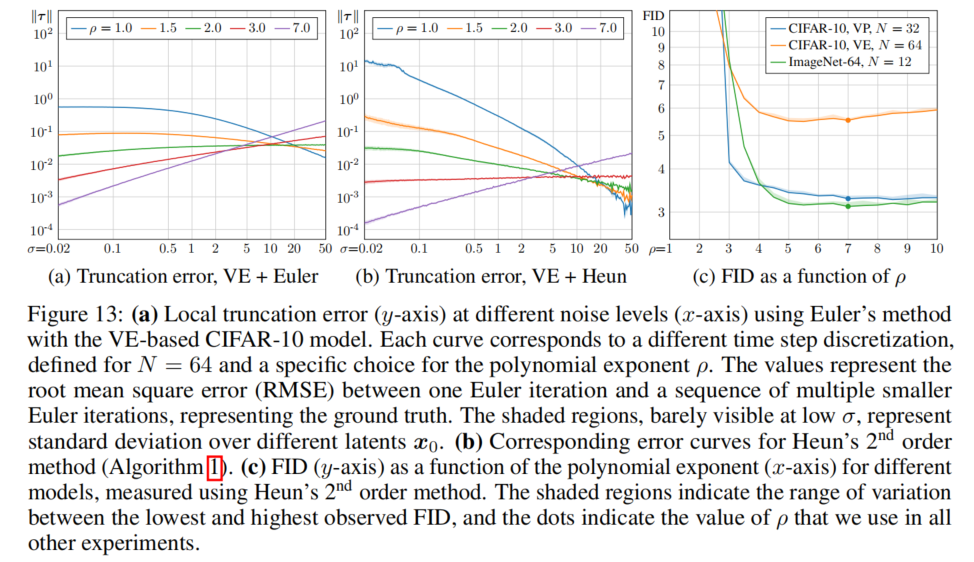 |
|---|
| 图13：使用基于方差爆炸（VE）的CIFAR-10模型和欧拉方法时，不同噪声水平（x轴）下的局部截断误差（y轴）。每条曲线对应于不同的时间步离散化，为$N = 64$和多项式指数$\rho$的特定选择所定义。这些数值表示一次欧拉迭代与一系列较小的欧拉迭代（代表真实值）之间的均方根误差（RMSE）。在低$\sigma$值时几乎不可见的阴影区域，表示不同潜在变量$x_0$的标准偏差。（b）Heun二阶法（算法1）的相应误差曲线。（c）使用Heun二阶法测量不同模型的FID（y轴）随多项式指数$\rho$（x轴）的变化。阴影区域表示观察到的最低和最高FID之间的变化范围，点表示我们在所有其他实验中使用的$\rho$值。 |
D.2二阶龙格 - 库塔变体的一般族
算法1中所示的休恩方法属于一类显式两阶段二阶龙格 - 库塔方法，这类方法的计算成本相同。这类方法的一个常见参数化形式为：
其中$h = t_{i + 1} - t_{i}$，$\alpha$是一个参数，用于控制额外梯度的评估位置以及它对所采取步骤的影响程度。设置$\alpha = 1$对应于休恩方法，$\alpha = \frac{1}{2}$和$\alpha = \frac{2}{3}$分别产生所谓的中点法和拉尔森法。由于底层函数$f$的几何形状不同，所有这些变体产生的近似误差也不同。
为了确定在我们的应用场景中最优的$\alpha$值，我们进行了一系列单独的实验。根据结果，$\alpha = 1$似乎非常接近最优值。尽管如此，实验中得到的最佳选择是$\alpha = 1.1$，它的表现略好一些，尽管从理论上讲，大于1的值很难解释，因为它们会使计算超出目标$t_{i + 1}$ 。由于我们无法很好地解释这一现象，也不确定它是否具有一般性，所以我们没有将$\alpha$作为一个新的超参数，而是将其固定为1，这恰好对应于休恩方法。进一步的分析留作未来的工作，包括在采样过程中让$\alpha$变化的可能性。
将$\alpha$设置为1的另一个好处是，它使得可以使用仅针对特定$\sigma$值进行训练的预训练神经网络$D_{\theta}(x ; \sigma)$。这是因为休恩步在恰好$t_{i + 1}$处评估额外梯度，这与其他二阶变体不同。因此，确保每个$t_{i}$对应于网络所训练的$\sigma$值就足够了。
算法3展示了由$\alpha$参数化的一般二阶求解器的伪代码。为了清晰起见，伪代码假设采用了我们在第3节中倡导的$\sigma(t) = t$和$s(t) = 1$的特定选择。请注意，只有当$\alpha \geq 1$时，才会执行回退到欧拉步的操作（第11行）。
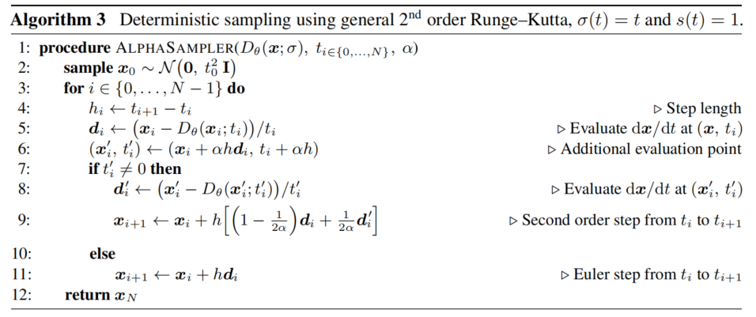
E 随机采样的更多结果
E.1 过度随机迭代导致的图像退化
图14展示了过度的朗之万迭代（第4节 “实际考虑”）所导致的图像退化情况。这些图像是通过在固定的噪声水平σ下进行指定次数的迭代生成的，每次迭代时添加和去除等量的噪声。理论上，朗之万动力学应使分布趋向于理想分布 $p(x;\sigma)$ ，但正如第4节所指出的，只有当去噪器 $D_{\theta}(x;\sigma)$ 在公式3中诱导出保守向量场时，这种情况才会发生。
| 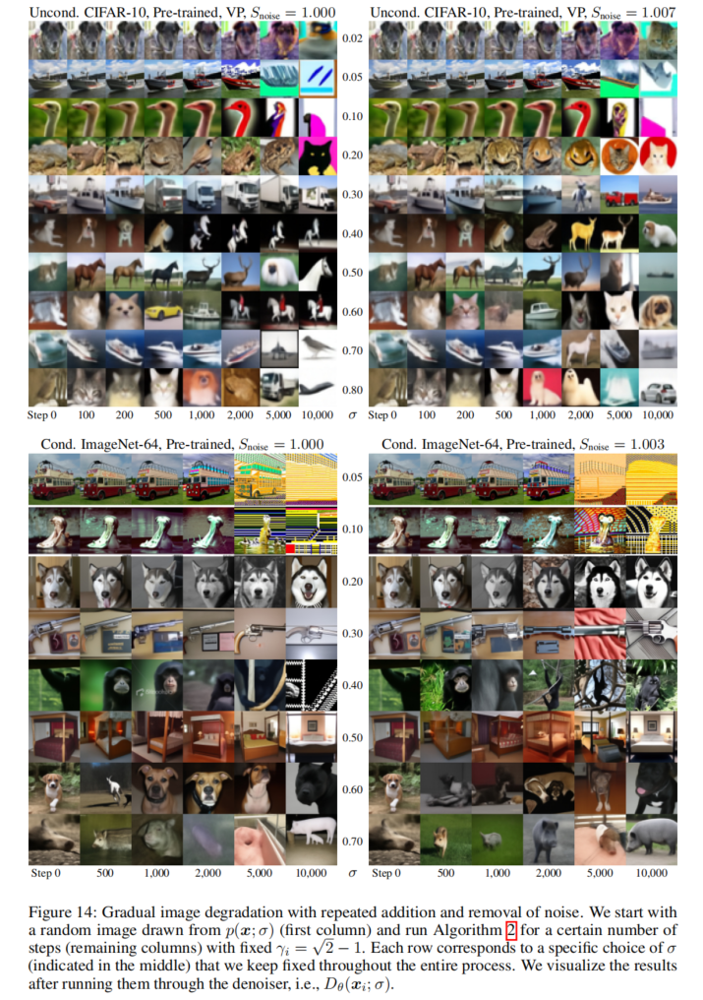 |
|---|
| 图14：随着噪声的反复添加和去除，图像逐渐退化。我们从固定$\gamma_{i}=\sqrt{2}-1$的步骤开始（其余列）。每一行对应于一个特定的$\sigma$选择，从$p(x ; \sigma)$中随机抽取一张图像（第一列），并运行算法2一定次数（中间所示），在整个过程中我们保持该次数不变。我们对经过去噪器（即$D_{\theta}(x_{i} ; \sigma)$）处理后的结果进行可视化。 |
从图中可以明显看出，在所有情况下，图像分布都会因重复迭代而受到影响，尽管具体的失效模式取决于数据集和噪声水平。对于低噪声水平（约0.2以下），图像在2000次迭代后往往会出现过饱和现象，之后会完全损坏。我们设置 $S_{tmin}>0$ 这一启发式方法，旨在在极低噪声水平下完全避免随机采样，以防止这种影响。
对于高噪声水平，我们可以看到，在不进行标准差校正（即 $S_{noise}=1.000$ ）的情况下进行迭代，图像在高迭代次数时往往会变得更加抽象且缺乏色彩；这在CIFAR-10的10000次迭代列中尤为明显，图像大多变成黑白的，且没有可辨别的背景。通过设置 $S_{noise}>1$ 来启发式地增大标准差，能有效地抵消这种趋势，如图中右侧的相应图像所示。值得注意的是，这仍然无法解决低噪声水平下的过饱和和损坏问题，这表明过度迭代的有害影响可能有多种来源。需要进一步研究，以更好地理解这些观察到的影响的根本原因。
图15展示了使用Song等人 [49] 以及Dhariwal和Nichol [9] 的预训练网络时，我们的随机采样器在固定的神经网络评估次数（NFE）下，以弗雷歇初始距离（FID）衡量的输出质量随 $S_{churn}$ 的变化情况。一般来说，对于每种情况以及我们的启发式校正的每种组合，都存在一个最优的随机程度，超过这个程度，结果就会开始变差。还可以看出，无论 $S_{churn}$ 的值是多少，通过启用所有校正都能得到最佳结果，尽管 $S_{noise}$ 或 $S_{tmin,tmax}$ 哪个更重要取决于具体情况。
| 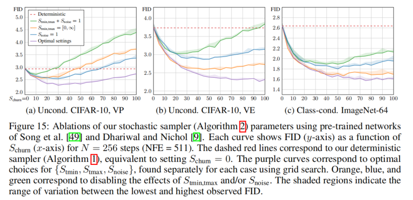 |
|---|
| 图15：使用Song等人[49]和Dhariwal与Nichol[9]的预训练网络，对我们的随机采样器（算法2）参数进行的消融实验。每条曲线展示了在步数(N = 256)（神经函数评估次数(NFE = 511)）的情况下，弗雷歇初始距离（FID，y轴）随(S_{churn})（x轴）的变化。红色虚线对应我们的确定性采样器（算法1），相当于设置(S_{churn}=0) 。紫色曲线对应通过网格搜索为每种情况分别找到的({S_{tmin}, S_{tmax}, S_{noise}})的最优选择。橙色、蓝色和绿色曲线分别对应禁用(S_{tmin,tmax})和/或(S_{noise})影响的情况。阴影区域表示观察到的最低和最高FID之间的变化范围。 |
E.2 随机采样参数
表5列出了我们在随机采样实验中使用的 $S_{churn}$ 、$S_{tmin}$ 、$S_{tmax}$ 和 $S_{noise}$ 的值。这些值是通过对最右列列出的组合进行网格搜索确定的。可以看出，最优参数取决于具体情况；希望对退化现象的更好理解，能在未来带来更直接的方法来处理这个问题。
| 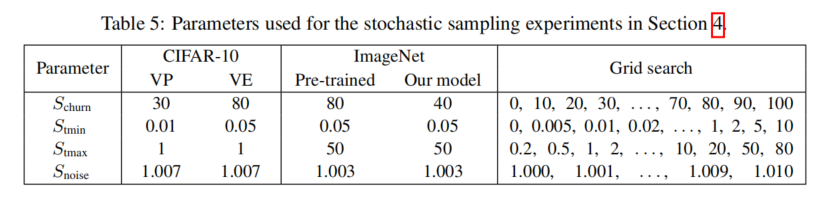 |
|---|
| 表5：第4节随机采样实验中使用的参数。 |
F 实施细节
我们在一个新编写的代码库中实现了我们的技术，该代码库大致基于Song等人[49]、Dhariwal和Nichol[9]以及Karras等人[26]的原始实现。我们进行了广泛的测试，以验证我们的实现产生的结果与之前的工作完全相同，包括采样器、预训练模型、网络架构、训练配置和评估。我们使用PyTorch 1.10.0、CUDA 11.4和CuDNN 8.2.0，在配备8个Tesla V100 GPU的NVIDIA DGX-1上运行所有实验。
我们的实现和预训练模型可在https://github.com/NVlabs/edm上获取。
F.1 FID计算
我们计算50,000张生成图像与所有可用真实图像之间的FID[15]，不进行任何如水平翻转之类的增强操作。我们使用StyleGAN3[26]提供的预训练Inception-v3模型，该模型是基于TensorFlow的原始模型的直接PyTorch转换版本。我们已经验证，与Dhariwal和Nichol[9]以及Karras等人[26]相比，我们的FID实现产生的结果相同。为了减少通常在±2% 左右的随机变化的影响，我们在每个实验中计算三次FID并报告最小值。我们还在图4、图5b、图13c和图15中突出显示了所达到的最高和最低FID之间的差异。
F.2 增强正则化
在第5节中，我们提出使用条件增强来应对$D_{\theta}$的过拟合问题。我们围绕Karras等人[25]最初在GAN背景下提出的相同概念构建我们的增强管道。在实践中，我们采用一组6种几何变换；我们发现其他类型的增强，如颜色失真和图像空间滤波，对基于扩散的模型始终有害。
我们的增强管道的详细信息如表6所示。在添加噪声$n \sim N(0, \sigma^{2} I)$之前，我们对每个训练图像$y \sim p_{data}$独立应用增强操作。首先，我们通过加权抛硬币的方式决定是否启用每种增强。启用给定增强的概率（“Prob.”列）在CIFAR-10中固定为12%，在FFHQ和AFHQv2中固定为15%，除了水平翻转总是启用。然后，我们从相应的分布中抽取8个随机参数（“Parameters”列）；如果给定的增强被禁用，我们将相关参数覆盖为零。基于这些参数，我们根据参数构建一个齐次2D变换矩阵（“Transformation”列）。使用[25]中的实现，通过2倍超采样高质量小波滤波器将此变换应用于图像。最后，我们构建一个9维的条件输入向量（“Conditioning”列），并将其与图像和噪声水平输入一起馈送到去噪器网络。
| 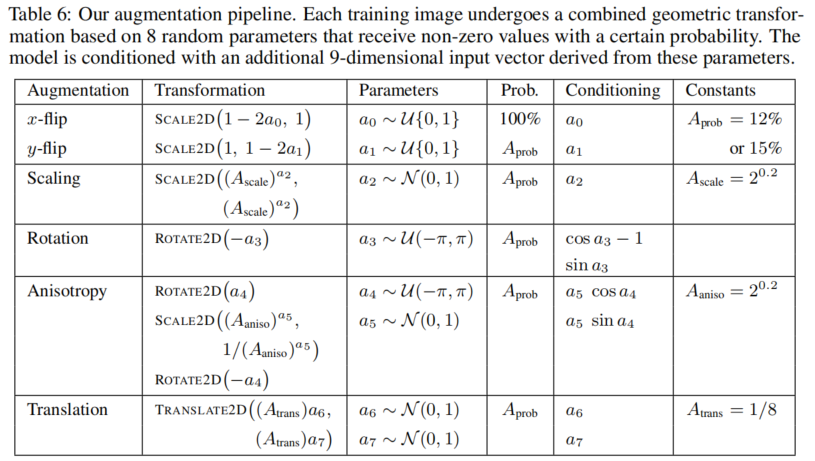 |
|---|
| 表6：我们的增强管道。每个训练图像都会基于8个随机参数进行组合几何变换，这些参数以一定概率取非零值。模型会通过从这些参数导出的额外9维输入向量进行条件设定。 |
条件输入的作用是为网络提供一组辅助任务；除了对$p(x; \sigma)$进行建模的主要任务之外，我们实际上要求网络为增强参数$a$的每个可能选择对无限组分布$p(x; \sigma, a)$进行建模。这些辅助任务为网络提供了各种各样独特的训练样本，防止其对任何单个样本过拟合。不过，辅助任务似乎对主要任务有益；我们推测这是因为对于$a$的每一个选择，去噪操作本身都是相似的。
我们设计的条件输入使得零对应于未应用任何增强的情况。在采样期间，我们只需将$a = 0$，即可获得与主要任务一致的结果。我们没有观察到辅助任务和主要任务之间有任何泄漏；即使$A_{prob}=100\%$，生成的图像也没有显示出任何域外几何变换的痕迹。在实践中，这意味着只要结果有所改进，我们可以随意选择常数${A_{prob}, A_{scale}, A_{aniso}, A_{trans}}$。水平翻转就是一个有趣的例子。大多数先前的工作通过随机水平翻转来增强训练集，这对大多数数据集是有益的，但缺点是生成图像中的任何文本或标志可能会镜像显示。使用我们的非泄漏增强，通过以100% 的概率执行水平翻转增强，我们可以在避免缺点的同时获得相同的好处。因此，我们完全依赖于我们的增强方案，并禁用数据集的水平翻转，以确保生成的图像符合原始分布。
F.3 训练配置
表7展示了我们在第5节中报告的训练实验中使用的具体超参数集。我们将首先详细介绍CIFAR-10、FFHQ和AFHQv2使用的配置，然后讨论改进的ImageNet模型的训练。
表2中的配置A（“Baseline”）对应于Song等人[49]针对两种情况（VP和VE）的原始设置，配置F（“Ours”）对应于我们改进后的设置。我们训练每个模型，直到从训练集中抽取总共2亿张图像，在表7中缩写为“200 Mimg”；这相当于使用512的批量大小进行约40万次训练迭代。我们每250万张图像保存一次模型快照，并报告使用确定性采样器（NFE = 35或NFE = 79，具体取决于分辨率）获得最低FID的快照结果。
在配置B中，我们重新调整基本超参数，以实现更快的训练并获得更有意义的比较点。具体来说，我们将并行度从4个GPU增加到8个，批量大小根据分辨率从128增加到512或256。我们还禁用了梯度裁剪（即强制$\left|d L(D_{\theta}) / d \theta\right|_{2} ≤1$），因为我们发现在实践中它没有益处。此外，我们将CIFAR-10的学习率从0.0002提高到0.001，并在前1000万张图像训练期间进行升温，同时将θ的指数移动平均半衰期标准化为50万张图像。最后，我们通过以1% 的增量进行全面网格搜索，调整每个数据集的随机失活概率，如表7所示。我们在32×32分辨率下训练CIFAR-10的总时间约为2天，在64×64分辨率下训练FFHQ和AFHQv2的总时间约为4天。
在配置C中，我们通过删除4×4层并将16×16层的容量加倍来提高模型的表达能力；我们发现前者主要导致过拟合，而后者对于获得高质量结果至关重要。Song等人[49]的原始模型在64×64（适用时）和32×32分辨率下采用128个通道，在16×16、8×8和4×4分辨率下采用256个通道。我们将这些数字更改为在64×64（适用时）分辨率下为128个通道，在32×32、16×16和8×8分辨率下为256个通道。在表7中，我们将这些计数缩写为128的倍数，从最高分辨率到最低分辨率列出。在实践中，这种重新平衡略微减少了可训练参数的总数，使得每个32×32分辨率的模型约有5600万个参数，每个64×64分辨率的模型约有6200万个参数。
| 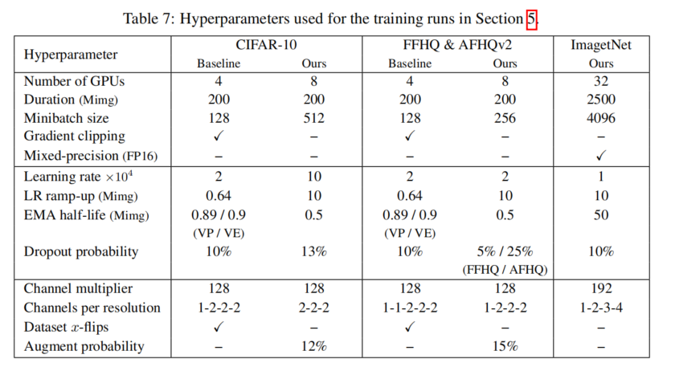 |
|---|
| 表7：第5节训练实验中使用的超参数。 |
在配置D中，我们用改进后的公式（表1中的“Network and preconditioning”部分）替换原始的预处理。在配置E中，我们对噪声分布和损失加权（表1中的“Training”部分）进行了同样的操作。最后，在配置F中，我们启用附录F.2中讨论的增强正则化。其他超参数与配置C保持相同。
对于ImageNet-64，与其他数据集相比，需要训练更长的时间才能达到最先进的结果。为了减少训练时间，我们使用32个NVIDIA Ampere GPU（4个节点），批量大小为4096（每个GPU 128），并通过混合精度FP16/FP32训练利用高性能张量核心。在实践中，我们将可训练参数存储为FP32，但在评估$F_{\theta}$时将它们转换为FP16，不过嵌入层和自注意力层除外，因为我们发现FP16有限的指数范围偶尔会导致稳定性问题。我们训练该模型两周，相当于从训练集中抽取约25亿张图像和约60万次训练迭代，使用0.0001的学习率、5000万张图像的指数移动平均，以及与Dhariwal和Nichol[9]相同的模型架构和随机失活概率。我们没有发现过拟合是一个问题，因此选择不采用增强正则化。
F.4 网络架构
由于我们的训练改进，在配置F中，除了网络架构之外，VP和VE的情况在其他方面变得相同；VP采用DDPM++架构，而VE采用NCSN++架构，这两种架构最初均由Song等人[49]提出。这些架构对应于相同U型网络骨干的相对简单的变体，有三个不同之处，如表8所示。首先，DDPM++在上下采样层使用盒式滤波器[1, 1]，而NCSN++使用双线性滤波器[1, 3, 3, 1]。其次，DDPM++直接继承自DDPM[16]的噪声水平位置编码方案，而NCSN++用随机傅里叶特征[52]取代了它。第三，NCSN++在编码器中从输入图像到每个块都引入了额外的残差跳跃连接，如[49]附录H（“渐进式增长架构”）中所解释的那样。
对于类别条件和增强正则化，我们通过在噪声水平输入旁边引入两个可选的条件输入来扩展原始的DDPM++和NCSN++架构。我们将类别标签表示为独热编码向量，首先将其缩放$\sqrt{C}$（其中$C$是类别总数），然后通过全连接层。对于增强参数，我们将附录F.2中的条件输入直接通过全连接层。然后，我们通过元素相加将得到的特征向量与原始噪声水平条件向量组合起来。
对于类别条件ImageNet-64，我们使用Dhariwal和Nichol[9]的ADM架构，不做任何更改。该模型总共有约2.96亿个可训练参数。如表7和表8中所详细说明的，与DDPM++最显著的区别包括使用稍微更浅的模型（每个分辨率3个残差块而不是4个），但有更多的通道（例如，最低分辨率下为768个而不是256个），在整个网络中散布更多的自注意力层（22个而不是6个），以及使用多头注意力（例如，最低分辨率下有12个头）。我们认为架构选择的确切影响仍然是一个有趣的未来研究问题。
| 表8：本文所使用的网络架构详情。 |
F.5 许可证
- 数据集
- CIFAR-10[29]：MIT许可证
- FFHQ[27]：知识共享署名 - 非商业性使用 - 相同方式共享4.0许可证
- AFHQv2[7]：知识共享署名 - 非商业性使用4.0许可证
- ImageNet[8]：许可证状态不明确
- 预训练模型
- Song等人[49]的CIFAR-10模型：Apache V2.0许可证
- Dhariwal和Nichol[9]的ImageNet-64模型：MIT许可证
- Szegedy等人[51]的Inception-v3模型：Apache V2.0许可证
疑问
公式17$s_{t}^{-d}$怎么得来的？
为了使概率密度函数的积分为1，例如：
文章总结
这篇论文发表于2022-NeurIPS，主要提出
创新点与主要思想
- 本文发现使用$f(t)$和$g(t)$来表示微分方程是不容易求解条件概率密度$p(x_t|x_0)$的，因此直接提出使用$s(t)$和$\sigma(t)$来完全替代$f(t)$和$g(t)$，从而获得一个更好的扩散模型设计空间。
常微分方程的均值$s(t)$和方差$s(t)\sigma(t)$的推导
对于Score-based SDE来说，有：
设上述随机微分方程对应的$x_t = s(t)x_0 + s(t)\sigma(t)\epsilon$，基于本文的定义，有：
在附录B.1的推导中，给出了：
下面我们来推导一下上述公式：
在ScoreSDE论文精读中，记录了苏老师先定义$p(\boldsymbol{x}_t|\boldsymbol{x}_0) = \mathcal{N}(\boldsymbol{x}_t; \bar{\alpha}_t \boldsymbol{x}_0, \bar{\beta}_t^2 \boldsymbol{I})$后求解$f(t)和g(t)$的过程，最终得到了以下结果：
将符号修改为与本论文一致，有：
对于$s(t)$，有：
其中，式(1.9)到(1.10)的推导如下：
对于$\sigma(t)$，有：
即可得到附录B.1中的关于$s(t)$和$\sigma(t)$的表示。
EDM设计空间下的ODE形式
对于Score-based SDE来说，PFODE有以下形式：
对于本文所提出的设计空间，ODE的一般形式为：
下面开始推导：
由公式(1.7)(1.8.2)得：
带入公式(2.1)得：
现在我们需要改变$p_t(x)$的表示：
其中，$p_a * p_b$表示概率密度函数$p_a$和$p_b$的卷积。括号内的表达式对应于通过向样本中添加独立同分布的高斯噪声得到的$p_{data}$的平滑版本。我们将这个分布表示为$p(x; \sigma)$：
现在，我们可以使用$p(x; \sigma)$而不是$p_t(x)$来表达PFODE（公式2.5）：
这样我们就得到了论文主体中的公式4，当设置$s(t) = 1$时，就恢复到公式1：
公式4强调了一个事实，即概率流ODE的每一个实现都只是同一个规范ODE的重新参数化；改变$\sigma(t)$对应于对$t$进行重新参数化，而改变$s(t)$对应于对$x$进行重新参数化。这就是EDM所提出得扩散模型的设计空间。
与得分匹配的联系
对于公式4中的$\nabla_x \log p(x/s(t); \sigma(t))$，需要使用神经网络进行预测，下面我们来看如何求它：
假设我们的训练集由有限数量的样本$\{y_1, …, y_Y\}$组成。这意味着$p_{data}(x)$由狄拉克δ分布的混合表示：
这使得我们也可以基于公式(2.11)以封闭形式表达$p(x; \sigma)$：
接下来，考虑公式(2.22)中定义的分布$p(x; \sigma)$的分数：
我们可以进一步简化公式(2.25)的分子：
将结果代回公式(2.25)：
现在考虑公式(2)中的去噪分数匹配损失。通过展开期望，我们可以将公式重写为对噪声样本$x$的积分：
公式(2.38)意味着我们可以通过独立地对每个$x$最小化$\mathcal{L}(D; x, \sigma)$来最小化$\mathcal{L}(D; \sigma)$：
这是一个凸优化问题；通过将关于$D(x; \sigma)$的梯度设为零，可以唯一确定其解：
这给出了理想去噪器$D(x; \sigma)$的封闭形式解。注意，对于小数据集，公式(2.45)在实践中是可计算的——我们在图1b中展示了CIFAR-10的结果。将公式(2.45)带入公式(2.33)，得到：
这就是得分和神经网络的联系。而我们从公式(4)以及公式(2.15)可以看到，得分是用$\nabla_{x}\log p(x / s(t); \sigma(t))$来表示，下面我们将$x$视为原始非缩放变量$\hat{x}$的缩放版本，并将$x = s(t)\hat{x}$代入我们缩放后的ODE（公式(4)或者公式(2.15)）中出现的分数项：
我们可以使用公式(2.46)，根据$D(\cdot)$进一步改写这个式子：
现在，我们将公式(2.51)代入公式(4)或者公式(2.15)中，用我们训练的模型$D_{\theta}(\cdot)$近似理想去噪器$D(\cdot)$：
最后，代回$\hat{x} = x / s(t)$：
我们可以将公式2.57等效地写为：
这与算法1的第4行和第7行一致。
EDM设计空间下SDE的形式
给定一个SDE
EDM中对应的一簇SDE为：
自由参数$g(t)$有效地指定了在任何给定时刻的噪声替换率。$g(t)=0$的特殊情况对应于概率流ODE。然而，由$g(t)$进行的参数化并不是特别直观。为了获得更具可解释性的参数化，我们设置$g(t)=\sqrt{2\beta(t)}\sigma(t)$，这就得到了论文主体中公式6的（正向）SDE：
现在噪声替换与噪声的标准差$\sigma(t)$成比例，比例因子为$\beta(t)$。实际上，根据公式3展开中间项中的分数函数，得到$\beta(t) [D(x;\sigma(t)) - x]dt$，这使得$x$与负噪声分量成比例地变化；随机项以相同的速率注入新的噪声。直观地说，根据当前噪声标准差缩放朗之万探索的幅度是一个合理的基线，因为由于密度的模糊，数据流形实际上被“扩展”了这个量。
在去噪扩散中使用的反向SDE，只需对公式3.3应用Anderson的时间反转公式（如Song等人的论文[49]中的公式6所述）即可得到；反转的全部效果是中间项的符号变化。
SDE的缩放推广可以使用与前面推导ODE类似的方法得到。因此，这里省略其推导过程。
损失函数与模型训练
根据公式2，给定去噪器 $D_{\theta}$ 在给定噪声水平 $\sigma$ 下的去噪分数匹配损失为：
我们通过对噪声水平求$L(D_{\theta} ; \sigma)$的加权期望，得到整体训练损失：
其中，噪声水平根据$\sigma \sim p_{train}$分布，并由$\lambda(\sigma)$加权。
利用我们在公式（7）中对 $D_{\theta}(\cdot)$ 的定义（$D_{\theta}(x; \sigma)=c_{skip}(\sigma)x + c_{out}(\sigma)F_{\theta}(c_{in}(\sigma)x; c_{noise}(\sigma)) \tag{7}$），我们可以进一步将 $\mathcal{L}(D_{\theta})$ 改写为：
这与公式8一致，并且对应于使用标准 $L_{2}$ 损失对 $F_{\theta}$ 进行传统监督训练，有效权重为 $w(·)$ ，目标为 $F_{target}(·)$ ，其中：
现在，我们可以从第一性原理推导出 $c_{in}(\sigma)$、$c_{out}(\sigma)$、$c_{skip}(\sigma)$ 和 $\lambda(\sigma)$ 的公式，如 表1 “我们的方法” 一列所示。
首先，我们要求 $F_{\theta}(\cdot)$ 的训练输入具有单位方差：
其次，我们要求有效训练目标 $F_{target}$ 具有单位方差：
第三，我们选择 $c_{skip}(\sigma)$ 来最小化 $c_{out}(\sigma)$，以便尽可能减少 $F_{\theta}$ 的误差放大：
由于 $c_{out}(\sigma) \geq 0$，我们可以等效地写为：
这是一个凸优化问题；通过将关于 $c_{skip}(\sigma)$ 的导数设为零，可以唯一确定其解：
现在，我们将公式(4.27)代入公式(4.19)，完成 $c_{out}(\sigma)$ 的公式：
第四，我们要求有效权重 $w(\sigma)$ 在所有噪声水平上是均匀的：
我们遵循先前的工作，将输出层权重初始化为零。因此，在初始化时 $F_{\theta}(\cdot)=0$ ，并且在每个噪声水平下损失的期望值为1。通过将 $\lambda(\sigma)$ 和 $c_{skip}(\sigma)$ 的选择代入公式(4.6)，并在固定的 $\sigma$ 下考虑，可以看出这一点：
不足之处
- 因为